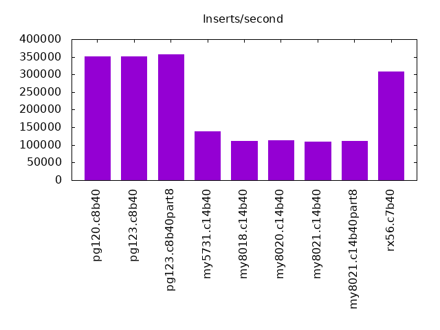
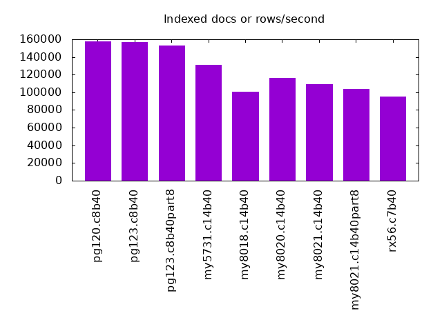
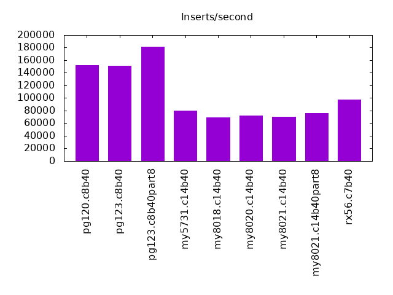
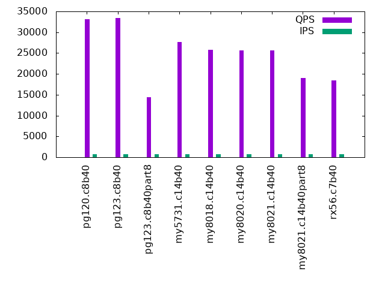
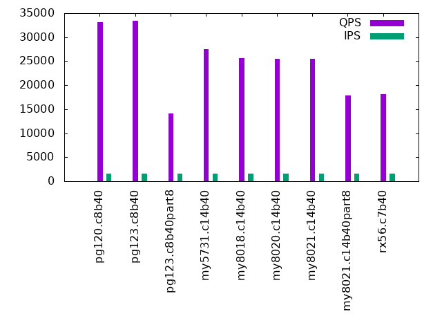
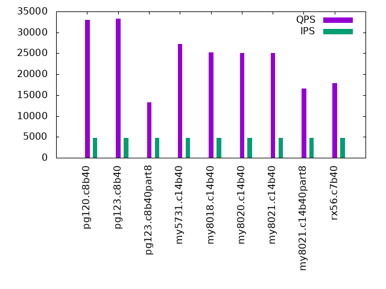
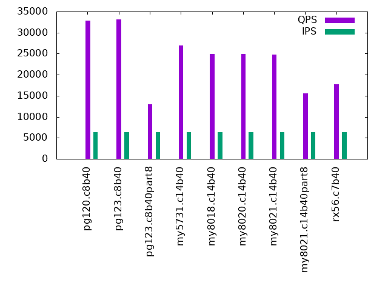
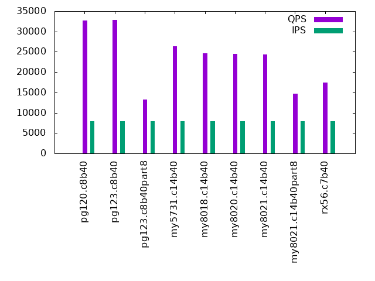

This is a report for the insert benchmark with 40M docs and 8 clients. It is generated by scripts (bash, awk, sed) and Tufte might not be impressed. An overview of the insert benchmark is here and a short update is here. Below, by DBMS, I mean DBMS+version.config. An example is my8020.c10b40 where my means MySQL, 8020 is version 8.0.20 and c10b40 is the name for the configuration file. All configurations are stored here.
The test server is a c3.8xlarge host with 20,000 EBS PIOPs, 60G RAM and 16 CPU cores (HT disabled). Clients and the DBMS share one server.
The tested DBMS are:
The numbers are inserts/s for l.i0 and l.i1, indexed docs (or rows) /s for l.x and queries/s for q*.2. The values are the average rate over the entire test for inserts (IPS) and queries (QPS). The range of values for IPS and QPS is split into 3 parts: bottom 25%, middle 50%, top 25%. Values in the bottom 25% have a red background, values in the top 25% have a green background and values in the middle have no color. A gray background is used for values that can be ignored because the DBMS did not sustain the target insert rate. Red backgrounds are not used when the minimum value is within 80% of the max value.
| dbms | l.i0 | l.x | l.i1 | q100.2 | q200.2 | q400.2 | q600.2 | q800.2 | q1000.2 |
|---|---|---|---|---|---|---|---|---|---|
| pg120.c8b40 | 350877 | 157874 | 152091 | 33166 | 33153 | 33228 | 33041 | 32875 | 32733 |
| pg123.c8b40 | 350877 | 156641 | 150943 | 33409 | 33438 | 33405 | 33288 | 33105 | 32902 |
| pg123.c8b40part8 | 357143 | 153053 | 180995 | 14420 | 14070 | 13873 | 13231 | 13023 | 13236 |
| my5731.c14b40 | 139373 | 131475 | 79681 | 27702 | 27474 | 27354 | 27198 | 26881 | 26385 |
| my8018.c14b40 | 111421 | 100501 | 69324 | 25766 | 25608 | 25411 | 25241 | 24958 | 24570 |
| my8020.c14b40 | 112676 | 116232 | 72333 | 25685 | 25548 | 25347 | 25098 | 24846 | 24427 |
| my8021.c14b40 | 109290 | 109264 | 70422 | 25608 | 25459 | 25264 | 25075 | 24799 | 24341 |
| my8021.c14b40part8 | 110497 | 103886 | 76046 | 18947 | 17918 | 17675 | 16593 | 15596 | 14718 |
| rx56.c7b40 | 307692 | 95024 | 98039 | 18408 | 18107 | 17969 | 17832 | 17645 | 17402 |
This lists the average rate of inserts/s for the tests that do inserts concurrent with queries. For such tests the query rate is listed in the table above. The read+write tests are setup so that the insert rate should match the target rate every second. Cells that are not at least 95% of the target have a red background to indicate a failure to satisfy the target.
| dbms | q100.2 | q200.2 | q400.2 | q600.2 | q800.2 | q1000.2 |
|---|---|---|---|---|---|---|
| pg120.c8b40 | 790 | 1580 | 3160 | 4739 | 6319 | 7899 |
| pg123.c8b40 | 789 | 1580 | 3158 | 4737 | 6319 | 7899 |
| pg123.c8b40part8 | 790 | 1580 | 3160 | 4739 | 6316 | 7895 |
| my5731.c14b40 | 790 | 1580 | 3160 | 4739 | 6319 | 7899 |
| my8018.c14b40 | 790 | 1580 | 3160 | 4739 | 6319 | 7899 |
| my8020.c14b40 | 790 | 1580 | 3160 | 4739 | 6319 | 7899 |
| my8021.c14b40 | 790 | 1580 | 3160 | 4739 | 6319 | 7899 |
| my8021.c14b40part8 | 790 | 1580 | 3160 | 4739 | 6319 | 7899 |
| rx56.c7b40 | 790 | 1580 | 3160 | 4739 | 6319 | 7895 |
| target | 800 | 1600 | 3200 | 4800 | 6400 | 8000 |
l.i0: load without secondary indexes. Graphs for performance per 1-second interval are here.
Average throughput:
Insert response time histogram: each cell has the percentage of responses that take <= the time in the header and max is the max response time in seconds. For the max column values in the top 25% of the range have a red background and in the bottom 25% of the range have a green background. The red background is not used when the min value is within 80% of the max value.
| dbms | 256us | 1ms | 4ms | 16ms | 64ms | 256ms | 1s | 4s | 16s | gt | max |
|---|---|---|---|---|---|---|---|---|---|---|---|
| pg120.c8b40 | 98.603 | 1.356 | 0.025 | 0.016 | 0.161 | ||||||
| pg123.c8b40 | 98.613 | 1.357 | 0.013 | 0.018 | 0.246 | ||||||
| pg123.c8b40part8 | 98.684 | 1.269 | 0.040 | 0.008 | 0.080 | ||||||
| my5731.c14b40 | 16.277 | 81.683 | 1.999 | 0.027 | 0.014 | 0.292 | |||||
| my8018.c14b40 | 6.849 | 91.031 | 1.958 | 0.154 | 0.008 | 0.267 | |||||
| my8020.c14b40 | 6.569 | 91.353 | 2.034 | 0.036 | 0.009 | 0.303 | |||||
| my8021.c14b40 | 5.685 | 92.221 | 2.048 | 0.033 | 0.013 | 0.348 | |||||
| my8021.c14b40part8 | 5.231 | 92.676 | 2.057 | 0.025 | 0.012 | 0.325 | |||||
| rx56.c7b40 | 99.194 | 0.780 | 0.014 | 0.012 | 0.334 |
Performance metrics for the DBMS listed above. Some are normalized by throughput, others are not. Legend for results is here.
ips qps rps rkbps wkbps rpq rkbpq wkbpi csps cpups cspq cpupq dbgb1 dbgb2 rss maxop p50 p99 tag 350877 0 0 0 174127 0.000 0.000 0.496 31502 62.6 0.090 29 4.3 11.2 1.5 0.161 57824 31662 pg120.c8b40 350877 0 0 0 174468 0.000 0.000 0.497 32199 63.5 0.092 29 4.3 11.2 1.6 0.246 58435 29864 pg123.c8b40 357143 0 0 0 173136 0.000 0.000 0.485 32029 63.3 0.090 28 4.3 11.2 0.0 0.080 59434 15383 pg123.c8b40part8 139373 0 0 0 58048 0.000 0.000 0.416 87415 39.1 0.627 45 4.3 37.8 7.2 0.292 18379 13384 my5731.c14b40 111421 0 0 0 47971 0.000 0.000 0.431 124679 40.7 1.119 58 4.3 37.8 7.4 0.267 14584 10998 my8018.c14b40 112676 0 0 0 47987 0.000 0.000 0.426 103267 41.9 0.916 59 4.3 37.8 7.4 0.303 14783 10688 my8020.c14b40 109290 0 0 0 46743 0.000 0.000 0.428 102925 42.2 0.942 62 4.2 37.8 7.3 0.348 14384 10488 my8021.c14b40 110497 0 0 0 46974 0.000 0.000 0.425 100058 43.3 0.906 63 4.2 37.8 7.3 0.325 14584 10688 my8021.c14b40part8 307692 0 0 0 64031 0.000 0.000 0.208 29806 62.3 0.097 32 1.9 4.0 0.8 0.334 50044 31265 rx56.c7b40
l.x: create secondary indexes.
Average throughput:
Performance metrics for the DBMS listed above. Some are normalized by throughput, others are not. Legend for results is here.
ips qps rps rkbps wkbps rpq rkbpq wkbpi csps cpups cspq cpupq dbgb1 dbgb2 rss maxop p50 p99 tag 157874 0 0 0 40785 0.000 0.000 0.258 377 5.9 0.002 6 7.8 16.5 0.0 0.003 NA NA pg120.c8b40 156641 0 0 0 41426 0.000 0.000 0.264 353 6.3 0.002 6 7.8 16.5 0.0 0.003 NA NA pg123.c8b40 153053 0 0 0 40693 0.000 0.000 0.266 487 6.5 0.003 7 7.8 16.5 0.0 0.003 NA NA pg123.c8b40part8 131475 0 0 0 101110 0.000 0.000 0.769 7648 5.4 0.058 7 7.6 41.1 10.3 0.028 NA NA my5731.c14b40 100501 0 236 30223 76562 0.002 0.301 0.762 7171 4.5 0.071 7 7.5 41.1 10.5 0.023 NA NA my8018.c14b40 116232 0 0 0 89059 0.000 0.000 0.766 5418 5.4 0.047 7 7.5 41.1 10.2 0.016 NA NA my8020.c14b40 109264 0 0 0 83045 0.000 0.000 0.760 5029 5.4 0.046 8 7.5 41.1 10.2 0.018 NA NA my8021.c14b40 103886 0 0 0 73283 0.000 0.000 0.705 6045 4.5 0.058 7 7.5 41.1 9.6 0.018 NA NA my8021.c14b40part8 95024 0 0 14 17465 0.000 0.000 0.184 365 6.3 0.004 11 4.4 6.5 2.8 0.003 NA NA rx56.c7b40
l.i1: continue load after secondary indexes created. Graphs for performance per 1-second interval are here.
Average throughput:
Insert response time histogram: each cell has the percentage of responses that take <= the time in the header and max is the max response time in seconds. For the max column values in the top 25% of the range have a red background and in the bottom 25% of the range have a green background. The red background is not used when the min value is within 80% of the max value.
| dbms | 256us | 1ms | 4ms | 16ms | 64ms | 256ms | 1s | 4s | 16s | gt | max |
|---|---|---|---|---|---|---|---|---|---|---|---|
| pg120.c8b40 | 96.173 | 3.372 | 0.439 | 0.016 | 0.108 | ||||||
| pg123.c8b40 | 96.252 | 3.302 | 0.439 | 0.007 | 0.093 | ||||||
| pg123.c8b40part8 | 0.002 | 98.538 | 1.342 | 0.094 | 0.024 | 0.192 | |||||
| my5731.c14b40 | 80.726 | 14.752 | 4.179 | 0.337 | 0.006 | 0.450 | |||||
| my8018.c14b40 | 46.573 | 48.859 | 4.132 | 0.429 | 0.007 | 0.758 | |||||
| my8020.c14b40 | 25.718 | 70.885 | 3.153 | 0.242 | 0.002 | 0.316 | |||||
| my8021.c14b40 | 17.456 | 79.066 | 3.228 | 0.248 | 0.001 | 0.316 | |||||
| my8021.c14b40part8 | 17.746 | 79.361 | 2.784 | 0.103 | 0.006 | 0.298 | |||||
| rx56.c7b40 | 61.374 | 38.604 | 0.007 | 0.006 | 0.009 | 0.317 |
Performance metrics for the DBMS listed above. Some are normalized by throughput, others are not. Legend for results is here.
ips qps rps rkbps wkbps rpq rkbpq wkbpi csps cpups cspq cpupq dbgb1 dbgb2 rss maxop p50 p99 tag 152091 0 0 0 220935 0.000 0.000 1.453 34832 59.9 0.229 63 17.3 45.5 0.0 0.108 22435 1698 pg120.c8b40 150943 0 0 0 220291 0.000 0.000 1.459 34847 60.3 0.231 64 17.3 45.5 0.0 0.093 22475 1748 pg123.c8b40 180995 0 0 0 229699 0.000 0.000 1.269 39231 60.6 0.217 54 17.3 43.5 0.0 0.192 25821 4697 pg123.c8b40part8 79681 0 0 0 116363 0.000 0.000 1.460 40940 37.8 0.514 76 21.0 54.5 21.9 0.450 10688 649 my5731.c14b40 69324 0 0 0 105917 0.000 0.000 1.528 79768 42.4 1.151 98 20.9 54.5 22.1 0.758 9239 400 my8018.c14b40 72333 0 42 671 120960 0.001 0.009 1.672 64423 45.6 0.891 101 20.9 54.5 22.1 0.316 9892 350 my8020.c14b40 70422 0 41 662 120027 0.001 0.009 1.704 63105 45.7 0.896 104 20.9 54.4 22.0 0.316 9538 300 my8021.c14b40 76046 0 27 429 91914 0.000 0.006 1.209 62652 47.9 0.824 101 18.9 52.4 19.6 0.298 10047 449 my8021.c14b40part8 98039 0 350 5593 78625 0.004 0.057 0.802 31461 41.9 0.321 68 9.1 12.3 3.6 0.317 12536 8591 rx56.c7b40
q100.2: range queries with 100 insert/s per client, 2nd loop. Graphs for performance per 1-second interval are here.
Average throughput:
Query response time histogram: each cell has the percentage of responses that take <= the time in the header and max is the max response time in seconds. For max values in the top 25% of the range have a red background and in the bottom 25% of the range have a green background. The red background is not used when the min value is within 80% of the max value.
| dbms | 256us | 1ms | 4ms | 16ms | 64ms | 256ms | 1s | 4s | 16s | gt | max |
|---|---|---|---|---|---|---|---|---|---|---|---|
| pg120.c8b40 | 98.967 | 1.019 | 0.012 | 0.001 | 0.034 | ||||||
| pg123.c8b40 | 99.011 | 0.975 | 0.012 | 0.001 | 0.047 | ||||||
| pg123.c8b40part8 | 99.962 | 0.037 | 0.001 | 0.029 | |||||||
| my5731.c14b40 | 57.340 | 42.654 | 0.005 | 0.001 | 0.032 | ||||||
| my8018.c14b40 | 0.454 | 99.538 | 0.007 | 0.001 | 0.094 | ||||||
| my8020.c14b40 | 0.218 | 99.774 | 0.007 | 0.001 | 0.063 | ||||||
| my8021.c14b40 | 0.170 | 99.821 | 0.007 | 0.001 | 0.043 | ||||||
| my8021.c14b40part8 | 99.991 | 0.008 | 0.001 | 0.031 | |||||||
| rx56.c7b40 | 99.985 | 0.015 | 0.016 |
Insert response time histogram: each cell has the percentage of responses that take <= the time in the header and max is the max response time in seconds. For max values in the top 25% of the range have a red background and in the bottom 25% of the range have a green background. The red background is not used when the min value is within 80% of the max value.
| dbms | 256us | 1ms | 4ms | 16ms | 64ms | 256ms | 1s | 4s | 16s | gt | max |
|---|---|---|---|---|---|---|---|---|---|---|---|
| pg120.c8b40 | 82.385 | 4.774 | 12.823 | 0.017 | 0.074 | ||||||
| pg123.c8b40 | 82.302 | 4.562 | 13.090 | 0.045 | 0.076 | ||||||
| pg123.c8b40part8 | 89.757 | 5.559 | 4.681 | 0.003 | 0.065 | ||||||
| my5731.c14b40 | 96.913 | 2.108 | 0.979 | 0.038 | |||||||
| my8018.c14b40 | 76.802 | 20.493 | 2.632 | 0.073 | 0.097 | ||||||
| my8020.c14b40 | 86.031 | 12.469 | 1.490 | 0.010 | 0.067 | ||||||
| my8021.c14b40 | 76.927 | 20.896 | 2.177 | 0.046 | |||||||
| my8021.c14b40part8 | 77.958 | 20.753 | 1.288 | 0.039 | |||||||
| rx56.c7b40 | 97.556 | 2.444 | 0.011 |
Performance metrics for the DBMS listed above. Some are normalized by throughput, others are not. Legend for results is here.
ips qps rps rkbps wkbps rpq rkbpq wkbpi csps cpups cspq cpupq dbgb1 dbgb2 rss maxop p50 p99 tag 790 33166 0 0 5418 0.000 0.000 6.859 128531 37.2 3.875 179 17.9 49.7 0.0 0.034 4219 4107 pg120.c8b40 789 33409 0 0 5419 0.000 0.000 6.868 129585 37.6 3.879 180 17.9 49.7 0.0 0.047 4251 4123 pg123.c8b40 790 14420 0 0 4334 0.000 0.000 5.486 56773 43.9 3.937 487 17.9 47.6 0.0 0.029 1822 1790 pg123.c8b40part8 790 27702 0 0 1421 0.000 0.000 1.799 107749 46.5 3.890 269 22.4 56.0 23.2 0.032 3516 3452 my5731.c14b40 790 25766 0 0 1668 0.000 0.000 2.112 101033 46.0 3.921 286 22.4 56.0 23.2 0.094 3260 3196 my8018.c14b40 790 25685 0 0 1499 0.000 0.000 1.897 100683 46.1 3.920 287 22.4 56.0 23.4 0.063 3260 3196 my8020.c14b40 790 25608 0 0 1665 0.000 0.000 2.108 100377 46.3 3.920 289 22.4 56.0 23.1 0.043 3244 3196 my8021.c14b40 790 18947 0 0 884 0.000 0.000 1.120 74469 46.1 3.930 389 19.6 53.1 20.5 0.031 2397 2365 my8021.c14b40part8 790 18408 0 0 1258 0.000 0.000 1.593 75638 47.2 4.109 410 9.3 12.9 7.5 0.016 2349 2205 rx56.c7b40
q200.2: range queries with 200 insert/s per client, 2nd loop. Graphs for performance per 1-second interval are here.
Average throughput:
Query response time histogram: each cell has the percentage of responses that take <= the time in the header and max is the max response time in seconds. For max values in the top 25% of the range have a red background and in the bottom 25% of the range have a green background. The red background is not used when the min value is within 80% of the max value.
| dbms | 256us | 1ms | 4ms | 16ms | 64ms | 256ms | 1s | 4s | 16s | gt | max |
|---|---|---|---|---|---|---|---|---|---|---|---|
| pg120.c8b40 | 98.837 | 1.146 | 0.014 | 0.002 | 0.042 | ||||||
| pg123.c8b40 | 98.903 | 1.080 | 0.014 | 0.002 | 0.041 | ||||||
| pg123.c8b40part8 | 99.949 | 0.050 | 0.001 | 0.033 | |||||||
| my5731.c14b40 | 51.889 | 48.104 | 0.007 | 0.001 | 0.040 | ||||||
| my8018.c14b40 | 0.323 | 99.664 | 0.012 | 0.001 | 0.059 | ||||||
| my8020.c14b40 | 0.181 | 99.805 | 0.013 | 0.001 | 0.065 | ||||||
| my8021.c14b40 | 0.133 | 99.853 | 0.012 | 0.001 | 0.061 | ||||||
| my8021.c14b40part8 | 99.982 | 0.015 | 0.003 | 0.024 | |||||||
| rx56.c7b40 | 99.973 | 0.026 | 0.001 | 0.037 |
Insert response time histogram: each cell has the percentage of responses that take <= the time in the header and max is the max response time in seconds. For max values in the top 25% of the range have a red background and in the bottom 25% of the range have a green background. The red background is not used when the min value is within 80% of the max value.
| dbms | 256us | 1ms | 4ms | 16ms | 64ms | 256ms | 1s | 4s | 16s | gt | max |
|---|---|---|---|---|---|---|---|---|---|---|---|
| pg120.c8b40 | 76.495 | 16.852 | 6.648 | 0.005 | 0.068 | ||||||
| pg123.c8b40 | 76.215 | 17.043 | 6.733 | 0.009 | 0.084 | ||||||
| pg123.c8b40part8 | 97.812 | 1.661 | 0.526 | 0.043 | |||||||
| my5731.c14b40 | 95.943 | 3.531 | 0.526 | 0.053 | |||||||
| my8018.c14b40 | 67.108 | 31.332 | 1.523 | 0.038 | 0.116 | ||||||
| my8020.c14b40 | 55.238 | 42.974 | 1.767 | 0.021 | 0.105 | ||||||
| my8021.c14b40 | 63.870 | 34.648 | 1.477 | 0.005 | 0.066 | ||||||
| my8021.c14b40part8 | 67.811 | 30.595 | 1.594 | 0.038 | |||||||
| rx56.c7b40 | 94.089 | 5.905 | 0.007 | 0.018 |
Performance metrics for the DBMS listed above. Some are normalized by throughput, others are not. Legend for results is here.
ips qps rps rkbps wkbps rpq rkbpq wkbpi csps cpups cspq cpupq dbgb1 dbgb2 rss maxop p50 p99 tag 1580 33153 0 0 5998 0.000 0.000 3.797 128140 37.8 3.865 182 20.5 52.3 0.0 0.042 4203 4075 pg120.c8b40 1580 33438 0 0 5993 0.000 0.000 3.794 129201 38.4 3.864 184 20.5 52.3 0.0 0.041 4235 4123 pg123.c8b40 1580 14070 0 0 2684 0.000 0.000 1.699 55476 44.4 3.943 505 19.2 49.0 0.0 0.033 1790 1758 pg123.c8b40part8 1580 27474 0 0 2573 0.000 0.000 1.629 106827 46.9 3.888 273 23.8 57.3 24.3 0.040 3484 3420 my5731.c14b40 1580 25608 0 0 2861 0.000 0.000 1.811 100465 46.6 3.923 291 23.9 57.5 24.4 0.059 3260 3196 my8018.c14b40 1580 25548 0 0 3101 0.000 0.000 1.963 100212 46.7 3.922 292 23.9 57.4 24.4 0.065 3228 3164 my8020.c14b40 1580 25459 0 0 2991 0.000 0.000 1.894 99896 46.6 3.924 293 23.9 57.4 24.4 0.061 3214 3164 my8021.c14b40 1580 17918 0 0 1756 0.000 0.000 1.111 70710 46.5 3.946 415 21.1 54.6 21.8 0.024 2269 2221 my8021.c14b40part8 1580 18107 0 0 2783 0.000 0.000 1.762 74461 47.4 4.112 419 10.0 10.3 10.1 0.037 2301 2110 rx56.c7b40
q400.2: range queries with 400 insert/s per client, 2nd loop. Graphs for performance per 1-second interval are here.
Average throughput:
Query response time histogram: each cell has the percentage of responses that take <= the time in the header and max is the max response time in seconds. For max values in the top 25% of the range have a red background and in the bottom 25% of the range have a green background. The red background is not used when the min value is within 80% of the max value.
| dbms | 256us | 1ms | 4ms | 16ms | 64ms | 256ms | 1s | 4s | 16s | gt | max |
|---|---|---|---|---|---|---|---|---|---|---|---|
| pg120.c8b40 | 98.597 | 1.378 | 0.020 | 0.005 | 0.029 | ||||||
| pg123.c8b40 | 98.670 | 1.304 | 0.020 | 0.005 | 0.032 | ||||||
| pg123.c8b40part8 | 99.887 | 0.108 | 0.005 | 0.036 | |||||||
| my5731.c14b40 | 50.968 | 49.016 | 0.014 | 0.002 | 0.042 | ||||||
| my8018.c14b40 | 0.386 | 99.582 | 0.026 | 0.005 | 0.089 | ||||||
| my8020.c14b40 | 0.162 | 99.801 | 0.032 | 0.005 | 0.080 | ||||||
| my8021.c14b40 | 0.126 | 99.837 | 0.031 | 0.005 | 0.051 | ||||||
| my8021.c14b40part8 | 99.952 | 0.038 | 0.010 | 0.043 | |||||||
| rx56.c7b40 | 99.922 | 0.069 | 0.008 | 0.039 |
Insert response time histogram: each cell has the percentage of responses that take <= the time in the header and max is the max response time in seconds. For max values in the top 25% of the range have a red background and in the bottom 25% of the range have a green background. The red background is not used when the min value is within 80% of the max value.
| dbms | 256us | 1ms | 4ms | 16ms | 64ms | 256ms | 1s | 4s | 16s | gt | max |
|---|---|---|---|---|---|---|---|---|---|---|---|
| pg120.c8b40 | 79.172 | 18.135 | 2.693 | 0.001 | 0.069 | ||||||
| pg123.c8b40 | 78.628 | 18.543 | 2.830 | 0.059 | |||||||
| pg123.c8b40part8 | 95.940 | 3.059 | 1.000 | 0.001 | 0.077 | ||||||
| my5731.c14b40 | 93.334 | 6.043 | 0.622 | 0.001 | 0.068 | ||||||
| my8018.c14b40 | 70.956 | 27.481 | 1.530 | 0.033 | 0.212 | ||||||
| my8020.c14b40 | 62.494 | 35.543 | 1.940 | 0.023 | 0.121 | ||||||
| my8021.c14b40 | 60.723 | 37.490 | 1.782 | 0.004 | 0.079 | ||||||
| my8021.c14b40part8 | 47.957 | 49.766 | 2.278 | 0.055 | |||||||
| rx56.c7b40 | 84.222 | 15.701 | 0.077 | 0.032 |
Performance metrics for the DBMS listed above. Some are normalized by throughput, others are not. Legend for results is here.
ips qps rps rkbps wkbps rpq rkbpq wkbpi csps cpups cspq cpupq dbgb1 dbgb2 rss maxop p50 p99 tag 3160 33228 0 0 6743 0.000 0.000 2.134 128219 39.0 3.859 188 24.7 56.4 0.0 0.029 4219 4075 pg120.c8b40 3158 33405 0 0 6738 0.000 0.000 2.134 128909 39.6 3.859 190 24.7 56.4 0.0 0.032 4251 4107 pg123.c8b40 3160 13873 0 0 2963 0.000 0.000 0.938 54904 44.8 3.957 517 21.8 51.5 1.3 0.036 1726 1678 pg123.c8b40part8 3160 27354 0 0 6101 0.000 0.000 1.931 106255 47.7 3.884 279 25.6 59.1 25.9 0.042 3468 3404 my5731.c14b40 3160 25411 0 0 8392 0.000 0.000 2.656 100026 47.4 3.936 298 26.0 59.5 26.2 0.089 3212 3132 my8018.c14b40 3160 25347 0 0 8231 0.000 0.000 2.605 99746 47.3 3.935 299 25.9 59.5 26.2 0.080 3212 3148 my8020.c14b40 3160 25264 0 0 8291 0.000 0.000 2.624 99472 47.4 3.937 300 25.9 59.5 26.2 0.051 3196 3116 my8021.c14b40 3160 17675 0 0 3517 0.000 0.000 1.113 70109 47.6 3.967 431 23.9 57.5 24.3 0.043 2237 2189 my8021.c14b40part8 3160 17969 0 0 4054 0.000 0.000 1.283 73915 48.3 4.114 430 11.3 13.0 13.9 0.039 2270 2078 rx56.c7b40
q600.2: range queries with 600 insert/s per client, 2nd loop. Graphs for performance per 1-second interval are here.
Average throughput:
Query response time histogram: each cell has the percentage of responses that take <= the time in the header and max is the max response time in seconds. For max values in the top 25% of the range have a red background and in the bottom 25% of the range have a green background. The red background is not used when the min value is within 80% of the max value.
| dbms | 256us | 1ms | 4ms | 16ms | 64ms | 256ms | 1s | 4s | 16s | gt | max |
|---|---|---|---|---|---|---|---|---|---|---|---|
| pg120.c8b40 | 98.330 | 1.632 | 0.032 | 0.006 | 0.032 | ||||||
| pg123.c8b40 | 98.453 | 1.510 | 0.031 | 0.006 | 0.032 | ||||||
| pg123.c8b40part8 | 99.803 | 0.189 | 0.008 | 0.030 | |||||||
| my5731.c14b40 | 49.452 | 50.513 | 0.031 | 0.004 | 0.027 | ||||||
| my8018.c14b40 | 0.350 | 99.562 | 0.082 | 0.006 | 0.101 | ||||||
| my8020.c14b40 | 0.192 | 99.717 | 0.084 | 0.006 | 0.042 | ||||||
| my8021.c14b40 | 0.175 | 99.733 | 0.086 | 0.006 | 0.037 | ||||||
| my8021.c14b40part8 | 99.892 | 0.093 | 0.014 | 0.001 | 0.035 | ||||||
| rx56.c7b40 | 99.855 | 0.133 | 0.013 | 0.039 |
Insert response time histogram: each cell has the percentage of responses that take <= the time in the header and max is the max response time in seconds. For max values in the top 25% of the range have a red background and in the bottom 25% of the range have a green background. The red background is not used when the min value is within 80% of the max value.
| dbms | 256us | 1ms | 4ms | 16ms | 64ms | 256ms | 1s | 4s | 16s | gt | max |
|---|---|---|---|---|---|---|---|---|---|---|---|
| pg120.c8b40 | 82.468 | 15.159 | 2.373 | 0.001 | 0.073 | ||||||
| pg123.c8b40 | 81.407 | 16.145 | 2.447 | 0.058 | |||||||
| pg123.c8b40part8 | 97.288 | 2.228 | 0.484 | 0.054 | |||||||
| my5731.c14b40 | 88.093 | 11.071 | 0.835 | 0.001 | 0.145 | ||||||
| my8018.c14b40 | 44.799 | 53.133 | 2.033 | 0.036 | 0.151 | ||||||
| my8020.c14b40 | 42.906 | 55.114 | 1.972 | 0.009 | 0.127 | ||||||
| my8021.c14b40 | 37.395 | 60.527 | 2.067 | 0.010 | 0.081 | ||||||
| my8021.c14b40part8 | 35.985 | 61.425 | 2.586 | 0.004 | 0.075 | ||||||
| rx56.c7b40 | 73.866 | 26.036 | 0.097 | 0.047 |
Performance metrics for the DBMS listed above. Some are normalized by throughput, others are not. Legend for results is here.
ips qps rps rkbps wkbps rpq rkbpq wkbpi csps cpups cspq cpupq dbgb1 dbgb2 rss maxop p50 p99 tag 4739 33041 0 0 8217 0.000 0.000 1.734 127075 39.5 3.846 191 27.7 59.4 0.0 0.032 4187 4059 pg120.c8b40 4737 33288 0 0 8220 0.000 0.000 1.735 128056 40.1 3.847 193 27.7 59.4 0.0 0.032 4205 4075 pg123.c8b40 4739 13231 0 0 4305 0.000 0.000 0.908 52524 45.4 3.970 549 25.6 55.3 0.0 0.030 1678 1631 pg123.c8b40part8 4739 27198 0 0 12800 0.000 0.000 2.701 105772 48.1 3.889 283 28.1 61.6 28.0 0.027 3454 3340 my5731.c14b40 4739 25241 0 0 13470 0.000 0.000 2.842 99694 48.2 3.950 306 28.5 62.1 28.5 0.101 3196 3085 my8018.c14b40 4739 25098 0 0 13270 0.000 0.000 2.800 99288 48.2 3.956 307 28.5 62.1 28.4 0.042 3180 3100 my8020.c14b40 4739 25075 0 0 13482 0.000 0.000 2.845 99209 48.2 3.957 308 28.5 62.1 28.4 0.037 3151 3084 my8021.c14b40 4739 16593 0 0 6679 0.000 0.000 1.409 66398 48.3 4.002 466 28.3 61.9 28.1 0.035 2095 2046 my8021.c14b40part8 4739 17832 0 0 5699 0.000 0.000 1.202 73465 48.8 4.120 438 13.3 17.3 20.8 0.039 2239 2014 rx56.c7b40
q800.2: range queries with 800 insert/s per client, 2nd loop. Graphs for performance per 1-second interval are here.
Average throughput:
Query response time histogram: each cell has the percentage of responses that take <= the time in the header and max is the max response time in seconds. For max values in the top 25% of the range have a red background and in the bottom 25% of the range have a green background. The red background is not used when the min value is within 80% of the max value.
| dbms | 256us | 1ms | 4ms | 16ms | 64ms | 256ms | 1s | 4s | 16s | gt | max |
|---|---|---|---|---|---|---|---|---|---|---|---|
| pg120.c8b40 | 98.114 | 1.834 | 0.045 | 0.007 | 0.033 | ||||||
| pg123.c8b40 | 98.228 | 1.718 | 0.047 | 0.007 | 0.032 | ||||||
| pg123.c8b40part8 | 99.709 | 0.276 | 0.014 | 0.027 | |||||||
| my5731.c14b40 | 46.136 | 53.755 | 0.102 | 0.006 | 0.001 | 0.233 | |||||
| my8018.c14b40 | 0.294 | 99.568 | 0.131 | 0.006 | 0.001 | 0.145 | |||||
| my8020.c14b40 | 0.158 | 99.704 | 0.131 | 0.007 | 0.081 | ||||||
| my8021.c14b40 | 0.139 | 99.724 | 0.131 | 0.006 | 0.075 | ||||||
| my8021.c14b40part8 | 99.833 | 0.148 | 0.018 | 0.001 | 0.050 | ||||||
| rx56.c7b40 | 99.739 | 0.246 | 0.014 | 0.042 |
Insert response time histogram: each cell has the percentage of responses that take <= the time in the header and max is the max response time in seconds. For max values in the top 25% of the range have a red background and in the bottom 25% of the range have a green background. The red background is not used when the min value is within 80% of the max value.
| dbms | 256us | 1ms | 4ms | 16ms | 64ms | 256ms | 1s | 4s | 16s | gt | max |
|---|---|---|---|---|---|---|---|---|---|---|---|
| pg120.c8b40 | 84.001 | 13.540 | 2.459 | 0.089 | |||||||
| pg123.c8b40 | 81.547 | 15.902 | 2.549 | 0.002 | 0.078 | ||||||
| pg123.c8b40part8 | 95.891 | 3.694 | 0.416 | 0.062 | |||||||
| my5731.c14b40 | 64.299 | 33.705 | 1.977 | 0.017 | 0.001 | 0.277 | |||||
| my8018.c14b40 | 39.674 | 58.117 | 2.157 | 0.050 | 0.002 | 0.562 | |||||
| my8020.c14b40 | 37.247 | 60.632 | 2.109 | 0.013 | 0.091 | ||||||
| my8021.c14b40 | 34.008 | 63.872 | 2.107 | 0.014 | 0.095 | ||||||
| my8021.c14b40part8 | 35.140 | 62.422 | 2.438 | 0.057 | |||||||
| rx56.c7b40 | 41.300 | 58.498 | 0.201 | 0.040 |
Performance metrics for the DBMS listed above. Some are normalized by throughput, others are not. Legend for results is here.
ips qps rps rkbps wkbps rpq rkbpq wkbpi csps cpups cspq cpupq dbgb1 dbgb2 rss maxop p50 p99 tag 6319 32875 0 0 10146 0.000 0.000 1.606 125969 40.4 3.832 197 31.7 63.5 0.0 0.033 4171 4041 pg120.c8b40 6319 33105 0 0 10150 0.000 0.000 1.606 126669 40.6 3.826 196 31.7 63.5 0.0 0.032 4187 4047 pg123.c8b40 6316 13023 0 0 5680 0.000 0.000 0.899 51827 46.1 3.980 566 30.7 60.4 0.0 0.027 1630 1598 pg123.c8b40part8 6319 26881 0 0 17396 0.000 0.000 2.753 104768 48.8 3.897 290 32.0 65.5 31.5 0.233 3420 3292 my5731.c14b40 6319 24958 0 0 17935 0.000 0.000 2.838 98949 49.1 3.965 315 32.5 66.0 31.9 0.145 3148 3036 my8018.c14b40 6319 24846 0 0 17629 0.000 0.000 2.790 98681 49.3 3.972 317 32.5 66.0 31.8 0.081 3132 3037 my8020.c14b40 6319 24799 0 0 17535 0.000 0.000 2.775 98401 49.2 3.968 317 32.5 66.0 31.9 0.075 3132 3052 my8021.c14b40 6319 15596 0 0 8470 0.000 0.000 1.340 62895 49.4 4.033 507 34.1 67.7 33.1 0.050 1967 1918 my8021.c14b40part8 6319 17645 0 0 7132 0.000 0.000 1.129 72932 49.4 4.133 448 15.7 18.6 29.5 0.042 2223 2030 rx56.c7b40
q1000.2: range queries with 1000 insert/s per client, 2nd loop. Graphs for performance per 1-second interval are here.
Average throughput:
Query response time histogram: each cell has the percentage of responses that take <= the time in the header and max is the max response time in seconds. For max values in the top 25% of the range have a red background and in the bottom 25% of the range have a green background. The red background is not used when the min value is within 80% of the max value.
| dbms | 256us | 1ms | 4ms | 16ms | 64ms | 256ms | 1s | 4s | 16s | gt | max |
|---|---|---|---|---|---|---|---|---|---|---|---|
| pg120.c8b40 | 97.739 | 2.190 | 0.063 | 0.008 | 0.033 | ||||||
| pg123.c8b40 | 97.813 | 2.116 | 0.064 | 0.007 | 0.052 | ||||||
| pg123.c8b40part8 | 99.621 | 0.360 | 0.019 | 0.031 | |||||||
| my5731.c14b40 | 37.672 | 62.172 | 0.146 | 0.010 | 0.001 | 0.085 | |||||
| my8018.c14b40 | 0.191 | 99.622 | 0.176 | 0.010 | 0.001 | 0.184 | |||||
| my8020.c14b40 | 0.118 | 99.691 | 0.180 | 0.010 | 0.001 | 0.114 | |||||
| my8021.c14b40 | 0.081 | 99.727 | 0.180 | 0.011 | 0.001 | 0.132 | |||||
| my8021.c14b40part8 | 99.754 | 0.224 | 0.020 | 0.002 | 0.060 | ||||||
| rx56.c7b40 | 99.618 | 0.362 | 0.019 | 0.001 | 0.136 |
Insert response time histogram: each cell has the percentage of responses that take <= the time in the header and max is the max response time in seconds. For max values in the top 25% of the range have a red background and in the bottom 25% of the range have a green background. The red background is not used when the min value is within 80% of the max value.
| dbms | 256us | 1ms | 4ms | 16ms | 64ms | 256ms | 1s | 4s | 16s | gt | max |
|---|---|---|---|---|---|---|---|---|---|---|---|
| pg120.c8b40 | 79.174 | 18.192 | 2.633 | 0.001 | 0.075 | ||||||
| pg123.c8b40 | 78.744 | 18.559 | 2.696 | 0.001 | 0.077 | ||||||
| pg123.c8b40part8 | 92.390 | 7.009 | 0.601 | 0.001 | 0.072 | ||||||
| my5731.c14b40 | 59.613 | 36.504 | 3.859 | 0.024 | 0.001 | 0.442 | |||||
| my8018.c14b40 | 34.887 | 60.814 | 4.233 | 0.063 | 0.003 | 0.290 | |||||
| my8020.c14b40 | 30.628 | 65.009 | 4.310 | 0.052 | 0.126 | ||||||
| my8021.c14b40 | 27.731 | 68.015 | 4.241 | 0.014 | 0.144 | ||||||
| my8021.c14b40part8 | 30.626 | 66.705 | 2.655 | 0.015 | 0.150 | ||||||
| rx56.c7b40 | 40.164 | 59.676 | 0.160 | 0.043 |
Performance metrics for the DBMS listed above. Some are normalized by throughput, others are not. Legend for results is here.
ips qps rps rkbps wkbps rpq rkbpq wkbpi csps cpups cspq cpupq dbgb1 dbgb2 rss maxop p50 p99 tag 7899 32733 0 0 14237 0.000 0.000 1.802 124530 41.7 3.804 204 38.8 70.6 0.0 0.033 4126 3950 pg120.c8b40 7899 32902 0 0 14233 0.000 0.000 1.802 125127 41.5 3.803 202 38.8 70.6 0.0 0.052 4171 4011 pg123.c8b40 7895 13236 0 0 7153 0.000 0.000 0.906 52551 46.6 3.970 563 36.9 66.7 0.0 0.031 1662 1598 pg123.c8b40part8 7899 26385 0 0 29607 0.000 0.000 3.748 103120 49.8 3.908 302 43.7 77.2 41.5 0.085 3308 3212 my5731.c14b40 7899 24570 0 0 28780 0.000 0.000 3.643 97838 50.1 3.982 326 44.1 77.7 42.0 0.184 3116 2972 my8018.c14b40 7899 24427 0 0 28630 0.000 0.000 3.624 97630 50.2 3.997 329 44.1 77.7 41.9 0.114 3085 2959 my8020.c14b40 7899 24341 0 0 28633 0.000 0.000 3.625 97190 50.7 3.993 333 44.1 77.7 41.9 0.132 3101 2991 my8021.c14b40 7899 14718 0 0 10215 0.000 0.000 1.293 59881 50.4 4.069 548 41.3 74.9 39.4 0.060 1870 1806 my8021.c14b40part8 7895 17402 40 162 10807 0.002 0.009 1.369 72164 50.6 4.147 465 18.9 21.5 40.7 0.136 2206 1982 rx56.c7b40
l.i0: load without secondary indexes
Performance metrics for all DBMS, not just the ones listed above. Some are normalized by throughput, others are not. Legend for results is here.
ips qps rps rkbps wkbps rpq rkbpq wkbpi csps cpups cspq cpupq dbgb1 dbgb2 rss maxop p50 p99 tag 350877 0 0 0 174468 0.000 0.000 0.497 32199 63.5 0.092 29 4.3 11.2 1.6 0.246 58435 29864 pg123.c8b40 109290 0 0 0 46743 0.000 0.000 0.428 102925 42.2 0.942 62 4.2 37.8 7.3 0.348 14384 10488 my8021.c14b40 307692 0 0 0 64031 0.000 0.000 0.208 29806 62.3 0.097 32 1.9 4.0 0.8 0.334 50044 31265 rx56.c7b40 - 350877 0 0 0 174127 0.000 0.000 0.496 31502 62.6 0.090 29 4.3 11.2 1.5 0.161 57824 31662 pg120.c8b40 350877 0 0 0 174468 0.000 0.000 0.497 32199 63.5 0.092 29 4.3 11.2 1.6 0.246 58435 29864 pg123.c8b40 - 139373 0 0 0 58048 0.000 0.000 0.416 87415 39.1 0.627 45 4.3 37.8 7.2 0.292 18379 13384 my5731.c14b40 111421 0 0 0 47971 0.000 0.000 0.431 124679 40.7 1.119 58 4.3 37.8 7.4 0.267 14584 10998 my8018.c14b40 112676 0 0 0 47987 0.000 0.000 0.426 103267 41.9 0.916 59 4.3 37.8 7.4 0.303 14783 10688 my8020.c14b40 109290 0 0 0 46743 0.000 0.000 0.428 102925 42.2 0.942 62 4.2 37.8 7.3 0.348 14384 10488 my8021.c14b40 - 150943 0 0 0 59944 0.000 0.000 0.397 69116 40.8 0.458 43 4.3 37.8 9.7 0.345 19978 12991 my5731.c15b40 125392 0 0 0 50967 0.000 0.000 0.406 102969 44.0 0.821 56 4.2 37.8 9.9 0.537 16590 11795 my8018.c15b40 126183 0 0 0 50294 0.000 0.000 0.399 79383 44.4 0.629 56 4.3 37.8 9.9 0.291 16781 12586 my8020.c15b40 123839 0 0 0 50004 0.000 0.000 0.404 78756 44.7 0.636 58 4.2 37.8 9.8 0.348 16481 12086 my8021.c15b40 - 307692 0 0 0 64031 0.000 0.000 0.208 29806 62.3 0.097 32 1.9 4.0 0.8 0.334 50044 31265 rx56.c7b40 - 357143 0 0 0 173136 0.000 0.000 0.485 32029 63.3 0.090 28 4.3 11.2 0.0 0.080 59434 15383 pg123.c8b40part8 - 138408 0 0 0 57550 0.000 0.000 0.416 86762 39.5 0.627 46 4.3 37.8 7.2 0.278 18279 13684 my5731.c14b40part8 111732 0 0 0 48169 0.000 0.000 0.431 125924 42.3 1.127 61 4.3 37.8 7.4 0.350 14683 10591 my8018.c14b40part8 113314 0 0 0 48678 0.000 0.000 0.430 99959 43.1 0.882 61 4.3 37.8 7.4 0.313 14983 10788 my8020.c14b40part8 110497 0 0 0 46974 0.000 0.000 0.425 100058 43.3 0.906 63 4.2 37.8 7.3 0.325 14584 10688 my8021.c14b40part8 - 149813 0 0 0 59476 0.000 0.000 0.397 67953 41.4 0.454 44 4.3 37.8 9.7 0.329 19978 14484 my5731.c15b40part8 125392 0 0 0 51205 0.000 0.000 0.408 102459 44.9 0.817 57 4.3 37.8 9.9 0.299 16681 12386 my8018.c15b40part8 126582 0 0 0 50923 0.000 0.000 0.402 77860 45.0 0.615 57 4.2 37.8 9.8 0.293 16781 12586 my8020.c15b40part8 122699 0 0 0 49357 0.000 0.000 0.402 76560 45.1 0.624 59 4.2 37.8 9.8 0.316 16382 11791 my8021.c15b40part8
l.x: create secondary indexes
Performance metrics for all DBMS, not just the ones listed above. Some are normalized by throughput, others are not. Legend for results is here.
ips qps rps rkbps wkbps rpq rkbpq wkbpi csps cpups cspq cpupq dbgb1 dbgb2 rss maxop p50 p99 tag 156641 0 0 0 41426 0.000 0.000 0.264 353 6.3 0.002 6 7.8 16.5 0.0 0.003 NA NA pg123.c8b40 109264 0 0 0 83045 0.000 0.000 0.760 5029 5.4 0.046 8 7.5 41.1 10.2 0.018 NA NA my8021.c14b40 95024 0 0 14 17465 0.000 0.000 0.184 365 6.3 0.004 11 4.4 6.5 2.8 0.003 NA NA rx56.c7b40 - 157874 0 0 0 40785 0.000 0.000 0.258 377 5.9 0.002 6 7.8 16.5 0.0 0.003 NA NA pg120.c8b40 156641 0 0 0 41426 0.000 0.000 0.264 353 6.3 0.002 6 7.8 16.5 0.0 0.003 NA NA pg123.c8b40 - 131475 0 0 0 101110 0.000 0.000 0.769 7648 5.4 0.058 7 7.6 41.1 10.3 0.028 NA NA my5731.c14b40 100501 0 236 30223 76562 0.002 0.301 0.762 7171 4.5 0.071 7 7.5 41.1 10.5 0.023 NA NA my8018.c14b40 116232 0 0 0 89059 0.000 0.000 0.766 5418 5.4 0.047 7 7.5 41.1 10.2 0.016 NA NA my8020.c14b40 109264 0 0 0 83045 0.000 0.000 0.760 5029 5.4 0.046 8 7.5 41.1 10.2 0.018 NA NA my8021.c14b40 - 87174 0 0 0 68531 0.000 0.000 0.786 7369 3.8 0.085 7 7.7 41.2 12.8 0.015 NA NA my5731.c15b40 83195 0 0 0 65179 0.000 0.000 0.783 9783 4.1 0.118 8 7.5 41.1 13.1 0.023 NA NA my8018.c15b40 79093 0 0 0 62366 0.000 0.000 0.789 6967 3.9 0.088 8 7.6 41.1 12.3 0.020 NA NA my8020.c15b40 81174 0 0 0 63640 0.000 0.000 0.784 7568 4.0 0.093 8 7.5 41.1 12.2 0.020 NA NA my8021.c15b40 - 95024 0 0 14 17465 0.000 0.000 0.184 365 6.3 0.004 11 4.4 6.5 2.8 0.003 NA NA rx56.c7b40 - 153053 0 0 0 40693 0.000 0.000 0.266 487 6.5 0.003 7 7.8 16.5 0.0 0.003 NA NA pg123.c8b40part8 - 112011 0 0 0 80140 0.000 0.000 0.715 9185 4.6 0.082 7 7.6 41.1 10.3 0.018 NA NA my5731.c14b40part8 102558 0 0 0 72253 0.000 0.000 0.705 9463 5.0 0.092 8 7.5 41.1 10.5 0.018 NA NA my8018.c14b40part8 104974 0 0 0 73903 0.000 0.000 0.704 5881 4.6 0.056 7 7.5 41.1 9.7 0.037 NA NA my8020.c14b40part8 103886 0 0 0 73283 0.000 0.000 0.705 6045 4.5 0.058 7 7.5 41.1 9.6 0.018 NA NA my8021.c14b40part8 - 84244 0 0 0 61667 0.000 0.000 0.732 9737 3.6 0.116 7 7.7 41.2 12.8 0.017 NA NA my5731.c15b40part8 79880 0 0 0 57975 0.000 0.000 0.726 11540 4.0 0.144 8 7.5 41.1 13.1 0.028 NA NA my8018.c15b40part8 76236 0 0 0 55455 0.000 0.000 0.727 7287 3.6 0.096 8 7.5 41.1 11.9 0.019 NA NA my8020.c15b40part8 74397 0 0 0 54224 0.000 0.000 0.729 7930 3.6 0.107 8 7.5 41.1 11.9 0.019 NA NA my8021.c15b40part8
l.i1: continue load after secondary indexes created
Performance metrics for all DBMS, not just the ones listed above. Some are normalized by throughput, others are not. Legend for results is here.
ips qps rps rkbps wkbps rpq rkbpq wkbpi csps cpups cspq cpupq dbgb1 dbgb2 rss maxop p50 p99 tag 150943 0 0 0 220291 0.000 0.000 1.459 34847 60.3 0.231 64 17.3 45.5 0.0 0.093 22475 1748 pg123.c8b40 70422 0 41 662 120027 0.001 0.009 1.704 63105 45.7 0.896 104 20.9 54.4 22.0 0.316 9538 300 my8021.c14b40 98039 0 350 5593 78625 0.004 0.057 0.802 31461 41.9 0.321 68 9.1 12.3 3.6 0.317 12536 8591 rx56.c7b40 - 152091 0 0 0 220935 0.000 0.000 1.453 34832 59.9 0.229 63 17.3 45.5 0.0 0.108 22435 1698 pg120.c8b40 150943 0 0 0 220291 0.000 0.000 1.459 34847 60.3 0.231 64 17.3 45.5 0.0 0.093 22475 1748 pg123.c8b40 - 79681 0 0 0 116363 0.000 0.000 1.460 40940 37.8 0.514 76 21.0 54.5 21.9 0.450 10688 649 my5731.c14b40 69324 0 0 0 105917 0.000 0.000 1.528 79768 42.4 1.151 98 20.9 54.5 22.1 0.758 9239 400 my8018.c14b40 72333 0 42 671 120960 0.001 0.009 1.672 64423 45.6 0.891 101 20.9 54.5 22.1 0.316 9892 350 my8020.c14b40 70422 0 41 662 120027 0.001 0.009 1.704 63105 45.7 0.896 104 20.9 54.4 22.0 0.316 9538 300 my8021.c14b40 - 80808 0 0 0 93439 0.000 0.000 1.156 45194 40.2 0.559 80 19.6 53.1 23.0 0.487 10838 849 my5731.c15b40 70547 0 0 0 83090 0.000 0.000 1.178 83268 45.4 1.180 103 19.3 52.8 23.3 0.414 9489 749 my8018.c15b40 71174 0 221 1771 100398 0.003 0.025 1.411 65939 45.8 0.926 103 19.3 52.8 23.2 0.416 10089 200 my8020.c15b40 68493 0 218 1747 97331 0.003 0.025 1.421 63962 45.6 0.934 107 19.2 52.8 23.2 0.733 9739 150 my8021.c15b40 - 98039 0 350 5593 78625 0.004 0.057 0.802 31461 41.9 0.321 68 9.1 12.3 3.6 0.317 12536 8591 rx56.c7b40 - 180995 0 0 0 229699 0.000 0.000 1.269 39231 60.6 0.217 54 17.3 43.5 0.0 0.192 25821 4697 pg123.c8b40part8 - 86956 0 0 0 103706 0.000 0.000 1.193 47760 41.2 0.549 76 18.9 52.5 20.1 0.312 11537 1199 my5731.c14b40part8 74074 0 0 0 89993 0.000 0.000 1.215 88455 46.0 1.194 99 18.9 52.5 20.3 0.372 9789 599 my8018.c14b40part8 77220 0 27 430 93675 0.000 0.006 1.213 64001 48.0 0.829 99 18.9 52.5 19.7 0.425 10238 449 my8020.c14b40part8 76046 0 27 429 91914 0.000 0.006 1.209 62652 47.9 0.824 101 18.9 52.4 19.6 0.298 10047 449 my8021.c14b40part8 - 87912 0 0 0 94898 0.000 0.000 1.079 48181 42.5 0.548 77 18.5 52.1 22.1 0.306 11787 1798 my5731.c15b40part8 76775 0 0 0 82682 0.000 0.000 1.077 87905 47.9 1.145 100 18.3 51.8 22.3 0.556 10239 749 my8018.c15b40part8 78431 0 60 480 86775 0.001 0.006 1.106 63972 48.8 0.816 100 18.3 51.8 21.4 0.294 10488 549 my8020.c15b40part8 76336 0 61 485 84899 0.001 0.006 1.112 63246 49.1 0.829 103 18.2 51.8 21.3 0.325 10147 549 my8021.c15b40part8
q100.2: range queries with 100 insert/s per client, 2nd loop
Performance metrics for all DBMS, not just the ones listed above. Some are normalized by throughput, others are not. Legend for results is here.
ips qps rps rkbps wkbps rpq rkbpq wkbpi csps cpups cspq cpupq dbgb1 dbgb2 rss maxop p50 p99 tag 789 33409 0 0 5419 0.000 0.000 6.868 129585 37.6 3.879 180 17.9 49.7 0.0 0.047 4251 4123 pg123.c8b40 790 25608 0 0 1665 0.000 0.000 2.108 100377 46.3 3.920 289 22.4 56.0 23.1 0.043 3244 3196 my8021.c14b40 790 18408 0 0 1258 0.000 0.000 1.593 75638 47.2 4.109 410 9.3 12.9 7.5 0.016 2349 2205 rx56.c7b40 - 790 33166 0 0 5418 0.000 0.000 6.859 128531 37.2 3.875 179 17.9 49.7 0.0 0.034 4219 4107 pg120.c8b40 789 33409 0 0 5419 0.000 0.000 6.868 129585 37.6 3.879 180 17.9 49.7 0.0 0.047 4251 4123 pg123.c8b40 - 790 27702 0 0 1421 0.000 0.000 1.799 107749 46.5 3.890 269 22.4 56.0 23.2 0.032 3516 3452 my5731.c14b40 790 25766 0 0 1668 0.000 0.000 2.112 101033 46.0 3.921 286 22.4 56.0 23.2 0.094 3260 3196 my8018.c14b40 790 25685 0 0 1499 0.000 0.000 1.897 100683 46.1 3.920 287 22.4 56.0 23.4 0.063 3260 3196 my8020.c14b40 790 25608 0 0 1665 0.000 0.000 2.108 100377 46.3 3.920 289 22.4 56.0 23.1 0.043 3244 3196 my8021.c14b40 - 790 27427 0 0 1407 0.000 0.000 1.781 106733 46.9 3.892 274 20.9 54.5 24.2 0.044 3468 3420 my5731.c15b40 790 25402 0 0 1463 0.000 0.000 1.852 99639 46.4 3.922 292 20.6 54.2 24.5 0.023 3212 3164 my8018.c15b40 790 25261 0 0 1510 0.000 0.000 1.912 99107 46.5 3.923 295 20.6 54.1 24.1 0.030 3196 3148 my8020.c15b40 790 25084 0 0 1447 0.000 0.000 1.832 98449 46.8 3.925 299 20.6 54.1 24.4 0.032 3180 3132 my8021.c15b40 - 790 18408 0 0 1258 0.000 0.000 1.593 75638 47.2 4.109 410 9.3 12.9 7.5 0.016 2349 2205 rx56.c7b40 - 790 14420 0 0 4334 0.000 0.000 5.486 56773 43.9 3.937 487 17.9 47.6 0.0 0.029 1822 1790 pg123.c8b40part8 - 790 21000 0 0 605 0.000 0.000 0.766 81794 46.1 3.895 351 19.6 53.1 20.7 0.083 2685 2605 my5731.c14b40part8 790 19022 0 0 821 0.000 0.000 1.039 74790 46.2 3.932 389 19.6 53.2 21.0 0.046 2429 2365 my8018.c14b40part8 790 19024 0 0 906 0.000 0.000 1.147 74809 46.2 3.932 389 19.6 53.2 20.6 0.049 2413 2381 my8020.c14b40part8 790 18947 0 0 884 0.000 0.000 1.120 74469 46.1 3.930 389 19.6 53.1 20.5 0.031 2397 2365 my8021.c14b40part8 - 790 20549 0 0 813 0.000 0.000 1.029 80131 46.8 3.899 364 19.2 52.7 22.7 0.023 2624 2557 my5731.c15b40part8 790 18741 0 0 877 0.000 0.000 1.110 73888 46.3 3.943 395 19.0 52.5 22.6 0.027 2397 2333 my8018.c15b40part8 790 18703 0 0 855 0.000 0.000 1.082 73699 46.0 3.940 394 18.9 52.5 22.6 0.023 2365 2333 my8020.c15b40part8 790 18644 0 0 905 0.000 0.000 1.146 73479 46.0 3.941 395 18.9 52.5 22.2 0.030 2349 2317 my8021.c15b40part8
q200.2: range queries with 200 insert/s per client, 2nd loop
Performance metrics for all DBMS, not just the ones listed above. Some are normalized by throughput, others are not. Legend for results is here.
ips qps rps rkbps wkbps rpq rkbpq wkbpi csps cpups cspq cpupq dbgb1 dbgb2 rss maxop p50 p99 tag 1580 33438 0 0 5993 0.000 0.000 3.794 129201 38.4 3.864 184 20.5 52.3 0.0 0.041 4235 4123 pg123.c8b40 1580 25459 0 0 2991 0.000 0.000 1.894 99896 46.6 3.924 293 23.9 57.4 24.4 0.061 3214 3164 my8021.c14b40 1580 18107 0 0 2783 0.000 0.000 1.762 74461 47.4 4.112 419 10.0 10.3 10.1 0.037 2301 2110 rx56.c7b40 - 1580 33153 0 0 5998 0.000 0.000 3.797 128140 37.8 3.865 182 20.5 52.3 0.0 0.042 4203 4075 pg120.c8b40 1580 33438 0 0 5993 0.000 0.000 3.794 129201 38.4 3.864 184 20.5 52.3 0.0 0.041 4235 4123 pg123.c8b40 - 1580 27474 0 0 2573 0.000 0.000 1.629 106827 46.9 3.888 273 23.8 57.3 24.3 0.040 3484 3420 my5731.c14b40 1580 25608 0 0 2861 0.000 0.000 1.811 100465 46.6 3.923 291 23.9 57.5 24.4 0.059 3260 3196 my8018.c14b40 1580 25548 0 0 3101 0.000 0.000 1.963 100212 46.7 3.922 292 23.9 57.4 24.4 0.065 3228 3164 my8020.c14b40 1580 25459 0 0 2991 0.000 0.000 1.894 99896 46.6 3.924 293 23.9 57.4 24.4 0.061 3214 3164 my8021.c14b40 - 1580 27311 0 0 2462 0.000 0.000 1.559 106261 46.6 3.891 273 22.7 56.2 25.7 0.045 3436 3372 my5731.c15b40 1579 25323 0 0 2625 0.000 0.000 1.662 99460 46.5 3.928 294 22.4 55.9 26.0 0.077 3212 3148 my8018.c15b40 1580 25217 0 0 2714 0.000 0.000 1.718 99049 46.6 3.928 296 22.3 55.9 25.6 0.024 3196 3132 my8020.c15b40 1580 25062 0 0 2682 0.000 0.000 1.698 98460 46.7 3.929 298 22.3 55.9 25.9 0.092 3180 3116 my8021.c15b40 - 1580 18107 0 0 2783 0.000 0.000 1.762 74461 47.4 4.112 419 10.0 10.3 10.1 0.037 2301 2110 rx56.c7b40 - 1580 14070 0 0 2684 0.000 0.000 1.699 55476 44.4 3.943 505 19.2 49.0 0.0 0.033 1790 1758 pg123.c8b40part8 - 1580 19835 0 0 1565 0.000 0.000 0.991 77324 46.6 3.898 376 21.0 54.6 22.0 0.040 2493 2431 my5731.c14b40part8 1580 18018 0 0 1619 0.000 0.000 1.025 71136 46.7 3.948 415 21.1 54.7 22.3 0.050 2269 2206 my8018.c14b40part8 1580 18014 0 0 1705 0.000 0.000 1.079 71078 46.6 3.946 414 21.1 54.7 21.9 0.032 2269 2222 my8020.c14b40part8 1580 17918 0 0 1756 0.000 0.000 1.111 70710 46.5 3.946 415 21.1 54.6 21.8 0.024 2269 2221 my8021.c14b40part8 - 1580 19413 0 0 1598 0.000 0.000 1.012 75775 46.7 3.903 385 20.5 54.1 23.8 0.038 2461 2397 my5731.c15b40part8 1580 17625 0 0 1761 0.000 0.000 1.115 69781 46.5 3.959 422 20.3 53.9 23.8 0.026 2206 2174 my8018.c15b40part8 1580 17610 0 0 1760 0.000 0.000 1.114 69716 46.8 3.959 425 20.3 53.9 23.8 0.028 2222 2189 my8020.c15b40part8 1580 17514 0 0 1751 0.000 0.000 1.109 69338 46.9 3.959 428 20.3 53.9 23.4 0.032 2206 2158 my8021.c15b40part8
q400.2: range queries with 400 insert/s per client, 2nd loop
Performance metrics for all DBMS, not just the ones listed above. Some are normalized by throughput, others are not. Legend for results is here.
ips qps rps rkbps wkbps rpq rkbpq wkbpi csps cpups cspq cpupq dbgb1 dbgb2 rss maxop p50 p99 tag 3158 33405 0 0 6738 0.000 0.000 2.134 128909 39.6 3.859 190 24.7 56.4 0.0 0.032 4251 4107 pg123.c8b40 3160 25264 0 0 8291 0.000 0.000 2.624 99472 47.4 3.937 300 25.9 59.5 26.2 0.051 3196 3116 my8021.c14b40 3160 17969 0 0 4054 0.000 0.000 1.283 73915 48.3 4.114 430 11.3 13.0 13.9 0.039 2270 2078 rx56.c7b40 - 3160 33228 0 0 6743 0.000 0.000 2.134 128219 39.0 3.859 188 24.7 56.4 0.0 0.029 4219 4075 pg120.c8b40 3158 33405 0 0 6738 0.000 0.000 2.134 128909 39.6 3.859 190 24.7 56.4 0.0 0.032 4251 4107 pg123.c8b40 - 3160 27354 0 0 6101 0.000 0.000 1.931 106255 47.7 3.884 279 25.6 59.1 25.9 0.042 3468 3404 my5731.c14b40 3160 25411 0 0 8392 0.000 0.000 2.656 100026 47.4 3.936 298 26.0 59.5 26.2 0.089 3212 3132 my8018.c14b40 3160 25347 0 0 8231 0.000 0.000 2.605 99746 47.3 3.935 299 25.9 59.5 26.2 0.080 3212 3148 my8020.c14b40 3160 25264 0 0 8291 0.000 0.000 2.624 99472 47.4 3.937 300 25.9 59.5 26.2 0.051 3196 3116 my8021.c14b40 - 3160 27077 0 0 5544 0.000 0.000 1.755 105425 48.0 3.894 284 24.5 58.1 27.3 0.035 3407 3340 my5731.c15b40 3160 24992 0 0 6652 0.000 0.000 2.105 98665 47.9 3.948 307 24.3 57.9 27.7 0.082 3164 3100 my8018.c15b40 3160 24896 0 0 6452 0.000 0.000 2.042 98378 47.7 3.952 307 24.3 57.8 27.3 0.038 3148 3068 my8020.c15b40 3160 24740 0 0 6691 0.000 0.000 2.118 97836 48.1 3.955 311 24.3 57.8 27.6 0.071 3117 3053 my8021.c15b40 - 3160 17969 0 0 4054 0.000 0.000 1.283 73915 48.3 4.114 430 11.3 13.0 13.9 0.039 2270 2078 rx56.c7b40 - 3160 13873 0 0 2963 0.000 0.000 0.938 54904 44.8 3.957 517 21.8 51.5 1.3 0.036 1726 1678 pg123.c8b40part8 - 3160 19582 0 0 3357 0.000 0.000 1.063 76356 47.3 3.899 386 23.8 57.3 24.3 0.065 2446 2381 my5731.c14b40part8 3160 17735 0 0 3531 0.000 0.000 1.117 70367 47.6 3.968 429 24.0 57.5 24.8 0.129 2254 2174 my8018.c14b40part8 3160 17786 0 0 3511 0.000 0.000 1.111 70563 47.4 3.967 426 23.9 57.5 24.4 0.115 2253 2190 my8020.c14b40part8 3160 17675 0 0 3517 0.000 0.000 1.113 70109 47.6 3.967 431 23.9 57.5 24.3 0.043 2237 2189 my8021.c14b40part8 - 3160 19192 0 0 3435 0.000 0.000 1.087 75001 47.4 3.908 395 23.4 56.9 26.3 0.032 2429 2349 my5731.c15b40part8 3160 17395 0 0 3549 0.000 0.000 1.123 69302 47.5 3.984 437 23.2 56.8 26.3 0.120 2206 2142 my8018.c15b40part8 3160 17386 0 0 3542 0.000 0.000 1.121 69224 47.7 3.982 439 23.2 56.7 26.3 0.027 2191 2143 my8020.c15b40part8 3160 17288 0 0 3547 0.000 0.000 1.122 68834 47.9 3.982 443 23.2 56.8 25.9 0.069 2190 2142 my8021.c15b40part8
q600.2: range queries with 600 insert/s per client, 2nd loop
Performance metrics for all DBMS, not just the ones listed above. Some are normalized by throughput, others are not. Legend for results is here.
ips qps rps rkbps wkbps rpq rkbpq wkbpi csps cpups cspq cpupq dbgb1 dbgb2 rss maxop p50 p99 tag 4737 33288 0 0 8220 0.000 0.000 1.735 128056 40.1 3.847 193 27.7 59.4 0.0 0.032 4205 4075 pg123.c8b40 4739 25075 0 0 13482 0.000 0.000 2.845 99209 48.2 3.957 308 28.5 62.1 28.4 0.037 3151 3084 my8021.c14b40 4739 17832 0 0 5699 0.000 0.000 1.202 73465 48.8 4.120 438 13.3 17.3 20.8 0.039 2239 2014 rx56.c7b40 - 4739 33041 0 0 8217 0.000 0.000 1.734 127075 39.5 3.846 191 27.7 59.4 0.0 0.032 4187 4059 pg120.c8b40 4737 33288 0 0 8220 0.000 0.000 1.735 128056 40.1 3.847 193 27.7 59.4 0.0 0.032 4205 4075 pg123.c8b40 - 4739 27198 0 0 12800 0.000 0.000 2.701 105772 48.1 3.889 283 28.1 61.6 28.0 0.027 3454 3340 my5731.c14b40 4739 25241 0 0 13470 0.000 0.000 2.842 99694 48.2 3.950 306 28.5 62.1 28.5 0.101 3196 3085 my8018.c14b40 4739 25098 0 0 13270 0.000 0.000 2.800 99288 48.2 3.956 307 28.5 62.1 28.4 0.042 3180 3100 my8020.c14b40 4739 25075 0 0 13482 0.000 0.000 2.845 99209 48.2 3.957 308 28.5 62.1 28.4 0.037 3151 3084 my8021.c14b40 - 4739 26814 0 0 11011 0.000 0.000 2.323 104787 48.4 3.908 289 27.1 60.6 29.5 0.059 3386 3292 my5731.c15b40 4739 24773 0 0 11381 0.000 0.000 2.401 98457 48.3 3.974 312 26.9 60.4 29.9 0.143 3148 3053 my8018.c15b40 4739 24702 0 0 11228 0.000 0.000 2.369 98471 48.4 3.986 313 26.8 60.4 29.5 0.027 3132 3052 my8020.c15b40 4739 24533 0 0 11342 0.000 0.000 2.393 97864 48.8 3.989 318 26.8 60.4 29.4 0.031 3116 3037 my8021.c15b40 - 4739 17832 0 0 5699 0.000 0.000 1.202 73465 48.8 4.120 438 13.3 17.3 20.8 0.039 2239 2014 rx56.c7b40 - 4739 13231 0 0 4305 0.000 0.000 0.908 52524 45.4 3.970 549 25.6 55.3 0.0 0.030 1678 1631 pg123.c8b40part8 - 4739 18452 0 0 6433 0.000 0.000 1.357 72092 48.1 3.907 417 28.1 61.7 28.1 0.093 2317 2253 my5731.c14b40part8 4739 16632 0 0 6924 0.000 0.000 1.461 66615 48.3 4.005 465 28.4 61.9 28.5 0.058 2094 2029 my8018.c14b40part8 4739 16721 0 0 6602 0.000 0.000 1.393 66868 48.5 3.999 464 28.4 61.9 28.2 0.327 2126 2062 my8020.c14b40part8 4739 16593 0 0 6679 0.000 0.000 1.409 66398 48.3 4.002 466 28.3 61.9 28.1 0.035 2095 2046 my8021.c14b40part8 - 4739 17907 0 0 6389 0.000 0.000 1.348 70357 48.4 3.929 432 27.7 61.2 29.9 0.043 2269 2187 my5731.c15b40part8 4739 16235 0 0 6300 0.000 0.000 1.329 65456 48.7 4.032 480 27.4 60.9 29.9 0.069 2047 1982 my8018.c15b40part8 4739 16242 0 0 6399 0.000 0.000 1.350 65492 48.9 4.032 482 27.4 60.9 29.5 0.090 2062 2008 my8020.c15b40part8 4739 16123 0 0 6263 0.000 0.000 1.322 64989 48.9 4.031 485 27.4 60.9 29.5 0.036 2046 1998 my8021.c15b40part8
q800.2: range queries with 800 insert/s per client, 2nd loop
Performance metrics for all DBMS, not just the ones listed above. Some are normalized by throughput, others are not. Legend for results is here.
ips qps rps rkbps wkbps rpq rkbpq wkbpi csps cpups cspq cpupq dbgb1 dbgb2 rss maxop p50 p99 tag 6319 33105 0 0 10150 0.000 0.000 1.606 126669 40.6 3.826 196 31.7 63.5 0.0 0.032 4187 4047 pg123.c8b40 6319 24799 0 0 17535 0.000 0.000 2.775 98401 49.2 3.968 317 32.5 66.0 31.9 0.075 3132 3052 my8021.c14b40 6319 17645 0 0 7132 0.000 0.000 1.129 72932 49.4 4.133 448 15.7 18.6 29.5 0.042 2223 2030 rx56.c7b40 - 6319 32875 0 0 10146 0.000 0.000 1.606 125969 40.4 3.832 197 31.7 63.5 0.0 0.033 4171 4041 pg120.c8b40 6319 33105 0 0 10150 0.000 0.000 1.606 126669 40.6 3.826 196 31.7 63.5 0.0 0.032 4187 4047 pg123.c8b40 - 6319 26881 0 0 17396 0.000 0.000 2.753 104768 48.8 3.897 290 32.0 65.5 31.5 0.233 3420 3292 my5731.c14b40 6319 24958 0 0 17935 0.000 0.000 2.838 98949 49.1 3.965 315 32.5 66.0 31.9 0.145 3148 3036 my8018.c14b40 6319 24846 0 0 17629 0.000 0.000 2.790 98681 49.3 3.972 317 32.5 66.0 31.8 0.081 3132 3037 my8020.c14b40 6319 24799 0 0 17535 0.000 0.000 2.775 98401 49.2 3.968 317 32.5 66.0 31.9 0.075 3132 3052 my8021.c14b40 - 6319 26472 0 0 14945 0.000 0.000 2.365 103973 49.3 3.928 298 31.0 64.5 32.8 0.081 3356 3228 my5731.c15b40 6323 24532 0 0 14593 0.000 0.000 2.308 97948 49.6 3.993 323 30.7 64.2 33.2 0.096 3116 2989 my8018.c15b40 6319 24464 0 0 14587 0.000 0.000 2.308 98027 49.9 4.007 326 30.6 64.2 32.8 0.241 3100 3005 my8020.c15b40 6319 24257 0 0 14545 0.000 0.000 2.302 97272 50.0 4.010 330 30.6 64.2 32.7 0.032 3069 2989 my8021.c15b40 - 6319 17645 0 0 7132 0.000 0.000 1.129 72932 49.4 4.133 448 15.7 18.6 29.5 0.042 2223 2030 rx56.c7b40 - 6316 13023 0 0 5680 0.000 0.000 0.899 51827 46.1 3.980 566 30.7 60.4 0.0 0.027 1630 1598 pg123.c8b40part8 - 6319 17284 0 0 8321 0.000 0.000 1.317 67771 49.1 3.921 455 33.9 67.4 32.7 0.085 2174 2095 my5731.c14b40part8 6319 15655 0 0 8520 0.000 0.000 1.348 63221 49.2 4.038 503 34.1 67.7 33.5 0.146 1982 1902 my8018.c14b40part8 6319 15681 0 0 8514 0.000 0.000 1.347 63219 49.5 4.032 505 34.1 67.7 33.2 0.055 1982 1919 my8020.c14b40part8 6319 15596 0 0 8470 0.000 0.000 1.340 62895 49.4 4.033 507 34.1 67.7 33.1 0.050 1967 1918 my8021.c14b40part8 - 6319 16743 0 0 8107 0.000 0.000 1.283 66143 49.1 3.950 469 33.3 66.8 34.7 0.055 2110 2062 my5731.c15b40part8 6319 15179 0 0 8121 0.000 0.000 1.285 62072 49.4 4.089 521 32.9 66.5 34.7 0.078 1902 1854 my8018.c15b40part8 6319 15200 0 0 8227 0.000 0.000 1.302 62020 49.5 4.080 521 33.0 66.5 34.4 0.058 1918 1870 my8020.c15b40part8 6319 15100 0 0 8228 0.000 0.000 1.302 61573 49.6 4.078 526 33.0 66.5 34.4 0.044 1903 1854 my8021.c15b40part8
q1000.2: range queries with 1000 insert/s per client, 2nd loop
Performance metrics for all DBMS, not just the ones listed above. Some are normalized by throughput, others are not. Legend for results is here.
ips qps rps rkbps wkbps rpq rkbpq wkbpi csps cpups cspq cpupq dbgb1 dbgb2 rss maxop p50 p99 tag 7899 32902 0 0 14233 0.000 0.000 1.802 125127 41.5 3.803 202 38.8 70.6 0.0 0.052 4171 4011 pg123.c8b40 7899 24341 0 0 28633 0.000 0.000 3.625 97190 50.7 3.993 333 44.1 77.7 41.9 0.132 3101 2991 my8021.c14b40 7895 17402 40 162 10807 0.002 0.009 1.369 72164 50.6 4.147 465 18.9 21.5 40.7 0.136 2206 1982 rx56.c7b40 - 7899 32733 0 0 14237 0.000 0.000 1.802 124530 41.7 3.804 204 38.8 70.6 0.0 0.033 4126 3950 pg120.c8b40 7899 32902 0 0 14233 0.000 0.000 1.802 125127 41.5 3.803 202 38.8 70.6 0.0 0.052 4171 4011 pg123.c8b40 - 7899 26385 0 0 29607 0.000 0.000 3.748 103120 49.8 3.908 302 43.7 77.2 41.5 0.085 3308 3212 my5731.c14b40 7899 24570 0 0 28780 0.000 0.000 3.643 97838 50.1 3.982 326 44.1 77.7 42.0 0.184 3116 2972 my8018.c14b40 7899 24427 0 0 28630 0.000 0.000 3.624 97630 50.2 3.997 329 44.1 77.7 41.9 0.114 3085 2959 my8020.c14b40 7899 24341 0 0 28633 0.000 0.000 3.625 97190 50.7 3.993 333 44.1 77.7 41.9 0.132 3101 2991 my8021.c14b40 - 7899 26183 0 0 23245 0.000 0.000 2.943 103261 50.0 3.944 306 41.6 75.1 41.5 0.115 3292 3148 my5731.c15b40 7899 24229 0 0 22587 0.000 0.000 2.859 97496 50.5 4.024 333 41.1 74.6 42.1 0.098 3069 2941 my8018.c15b40 7899 24070 0 0 22428 0.000 0.000 2.839 97439 50.6 4.048 336 41.0 74.6 41.8 0.114 3021 2925 my8020.c15b40 7899 23963 0 0 22417 0.000 0.000 2.838 96993 50.7 4.048 339 41.0 74.6 41.7 0.041 3038 2941 my8021.c15b40 - 7895 17402 40 162 10807 0.002 0.009 1.369 72164 50.6 4.147 465 18.9 21.5 40.7 0.136 2206 1982 rx56.c7b40 - 7895 13236 0 0 7153 0.000 0.000 0.906 52551 46.6 3.970 563 36.9 66.7 0.0 0.031 1662 1598 pg123.c8b40part8 - 7899 16270 0 0 10102 0.000 0.000 1.279 63946 49.6 3.930 488 41.1 74.6 38.9 0.097 2062 1966 my5731.c14b40part8 7899 14791 0 0 9836 0.000 0.000 1.245 60382 50.3 4.082 544 41.3 74.8 39.4 0.165 1870 1806 my8018.c14b40part8 7899 14781 0 0 10112 0.000 0.000 1.280 60080 50.5 4.065 547 41.3 74.9 39.4 0.083 1870 1822 my8020.c14b40part8 7899 14718 0 0 10215 0.000 0.000 1.293 59881 50.4 4.069 548 41.3 74.9 39.4 0.060 1870 1806 my8021.c14b40part8 - 7899 15580 0 0 9670 0.000 0.000 1.224 61850 50.1 3.970 515 40.4 73.9 40.8 0.095 1966 1886 my5731.c15b40part8 7899 14279 0 0 9635 0.000 0.000 1.220 58823 50.3 4.119 564 39.9 73.5 40.7 0.063 1806 1742 my8018.c15b40part8 7899 14287 0 0 9675 0.000 0.000 1.225 58938 50.8 4.125 569 40.0 73.5 40.4 0.046 1806 1742 my8020.c15b40part8 7899 14171 0 0 9611 0.000 0.000 1.217 58384 51.0 4.120 576 39.9 73.5 40.4 0.043 1791 1742 my8021.c15b40part8
Insert response time histogram
256us 1ms 4ms 16ms 64ms 256ms 1s 4s 16s gt max tag 0.000 0.000 98.603 1.356 0.025 0.016 0.000 0.000 0.000 0.000 0.161 pg120.c8b40 0.000 0.000 98.613 1.357 0.013 0.018 0.000 0.000 0.000 0.000 0.246 pg123.c8b40 - 0.000 0.000 16.277 81.683 1.999 0.027 0.014 0.000 0.000 0.000 0.292 my5731.c14b40 0.000 0.000 6.849 91.031 1.958 0.154 0.008 0.000 0.000 0.000 0.267 my8018.c14b40 0.000 0.000 6.569 91.353 2.034 0.036 0.009 0.000 0.000 0.000 0.303 my8020.c14b40 0.000 0.000 5.685 92.221 2.048 0.033 0.013 0.000 0.000 0.000 0.348 my8021.c14b40 - 0.000 0.000 31.355 66.572 2.038 0.018 0.017 0.000 0.000 0.000 0.345 my5731.c15b40 0.000 0.000 8.965 88.933 2.048 0.039 0.015 0.000 0.000 0.000 0.537 my8018.c15b40 0.000 0.000 8.508 89.400 2.060 0.021 0.011 0.000 0.000 0.000 0.291 my8020.c15b40 0.000 0.000 7.328 90.593 2.043 0.013 0.023 0.000 0.000 0.000 0.348 my8021.c15b40 - 0.000 0.000 99.194 0.780 0.000 0.014 0.012 0.000 0.000 0.000 0.334 rx56.c7b40 - 0.000 0.000 98.684 1.269 0.040 0.008 0.000 0.000 0.000 0.000 0.080 pg123.c8b40part8 - 0.000 0.000 14.656 83.322 1.987 0.016 0.018 0.000 0.000 0.000 0.278 my5731.c14b40part8 0.000 0.000 6.362 91.525 2.060 0.040 0.012 0.000 0.000 0.000 0.350 my8018.c14b40part8 0.000 0.000 6.113 91.791 2.059 0.030 0.006 0.000 0.000 0.000 0.313 my8020.c14b40part8 0.000 0.000 5.231 92.676 2.057 0.025 0.012 0.000 0.000 0.000 0.325 my8021.c14b40part8 - 0.000 0.000 28.298 69.609 2.058 0.019 0.016 0.000 0.000 0.000 0.329 my5731.c15b40part8 0.000 0.000 7.973 89.928 2.053 0.031 0.016 0.000 0.000 0.000 0.299 my8018.c15b40part8 0.000 0.000 7.723 90.188 2.050 0.028 0.012 0.000 0.000 0.000 0.293 my8020.c15b40part8 0.000 0.000 5.928 91.984 2.040 0.034 0.013 0.000 0.000 0.000 0.316 my8021.c15b40part8
TODO - determine whether there is data for create index response time
Insert response time histogram
256us 1ms 4ms 16ms 64ms 256ms 1s 4s 16s gt max tag 0.000 0.000 96.173 3.372 0.439 0.016 0.000 0.000 0.000 0.000 0.108 pg120.c8b40 0.000 0.000 96.252 3.302 0.439 0.007 0.000 0.000 0.000 0.000 0.093 pg123.c8b40 - 0.000 0.000 80.726 14.752 4.179 0.337 0.006 0.000 0.000 0.000 0.450 my5731.c14b40 0.000 0.000 46.573 48.859 4.132 0.429 0.007 0.000 0.000 0.000 0.758 my8018.c14b40 0.000 0.000 25.718 70.885 3.153 0.242 0.002 0.000 0.000 0.000 0.316 my8020.c14b40 0.000 0.000 17.456 79.066 3.228 0.248 0.001 0.000 0.000 0.000 0.316 my8021.c14b40 - 0.000 0.000 76.146 19.977 3.699 0.174 0.005 0.000 0.000 0.000 0.487 my5731.c15b40 0.000 0.000 32.693 63.341 3.707 0.255 0.004 0.000 0.000 0.000 0.414 my8018.c15b40 0.000 0.000 21.754 75.162 2.773 0.297 0.013 0.000 0.000 0.000 0.416 my8020.c15b40 0.000 0.000 14.037 82.839 2.788 0.292 0.044 0.000 0.000 0.000 0.733 my8021.c15b40 - 0.000 0.000 61.374 38.604 0.007 0.006 0.009 0.000 0.000 0.000 0.317 rx56.c7b40 - 0.000 0.002 98.538 1.342 0.094 0.024 0.000 0.000 0.000 0.000 0.192 pg123.c8b40part8 - 0.000 0.000 82.469 14.274 3.124 0.125 0.008 0.000 0.000 0.000 0.312 my5731.c14b40part8 0.000 0.000 27.737 68.842 3.249 0.166 0.006 0.000 0.000 0.000 0.372 my8018.c14b40part8 0.000 0.000 27.790 69.293 2.805 0.109 0.004 0.000 0.000 0.000 0.425 my8020.c14b40part8 0.000 0.000 17.746 79.361 2.784 0.103 0.006 0.000 0.000 0.000 0.298 my8021.c14b40part8 - 0.000 0.000 81.709 15.201 2.999 0.083 0.009 0.000 0.000 0.000 0.306 my5731.c15b40part8 0.000 0.000 33.285 63.504 3.107 0.099 0.004 0.000 0.000 0.000 0.556 my8018.c15b40part8 0.000 0.000 32.799 64.418 2.652 0.123 0.007 0.000 0.000 0.000 0.294 my8020.c15b40part8 0.000 0.000 18.570 78.621 2.679 0.129 0.001 0.000 0.000 0.000 0.325 my8021.c15b40part8
Query response time histogram
256us 1ms 4ms 16ms 64ms 256ms 1s 4s 16s gt max tag 98.967 1.019 0.012 0.001 0.000 0.000 0.000 0.000 0.000 0.000 0.034 pg120.c8b40 99.011 0.975 0.012 0.001 0.000 0.000 0.000 0.000 0.000 0.000 0.047 pg123.c8b40 - 57.340 42.654 0.005 0.001 0.000 0.000 0.000 0.000 0.000 0.000 0.032 my5731.c14b40 0.454 99.538 0.007 0.001 0.000 0.000 0.000 0.000 0.000 0.000 0.094 my8018.c14b40 0.218 99.774 0.007 0.001 0.000 0.000 0.000 0.000 0.000 0.000 0.063 my8020.c14b40 0.170 99.821 0.007 0.001 0.000 0.000 0.000 0.000 0.000 0.000 0.043 my8021.c14b40 - 51.057 48.938 0.005 0.000 0.000 0.000 0.000 0.000 0.000 0.000 0.044 my5731.c15b40 0.074 99.917 0.008 0.000 0.000 0.000 0.000 0.000 0.000 0.000 0.023 my8018.c15b40 0.045 99.947 0.008 0.000 0.000 0.000 0.000 0.000 0.000 0.000 0.030 my8020.c15b40 0.036 99.956 0.008 0.000 0.000 0.000 0.000 0.000 0.000 0.000 0.032 my8021.c15b40 - 0.000 99.985 0.015 0.000 0.000 0.000 0.000 0.000 0.000 0.000 0.016 rx56.c7b40 - 0.000 99.962 0.037 0.001 0.000 0.000 0.000 0.000 0.000 0.000 0.029 pg123.c8b40part8 - 0.000 99.994 0.005 0.001 0.000 0.000 0.000 0.000 0.000 0.000 0.083 my5731.c14b40part8 0.000 99.991 0.008 0.001 0.000 0.000 0.000 0.000 0.000 0.000 0.046 my8018.c14b40part8 0.000 99.991 0.008 0.001 0.000 0.000 0.000 0.000 0.000 0.000 0.049 my8020.c14b40part8 0.000 99.991 0.008 0.001 0.000 0.000 0.000 0.000 0.000 0.000 0.031 my8021.c14b40part8 - 0.000 99.995 0.005 0.000 0.000 0.000 0.000 0.000 0.000 0.000 0.023 my5731.c15b40part8 0.000 99.990 0.009 0.000 0.000 0.000 0.000 0.000 0.000 0.000 0.027 my8018.c15b40part8 0.000 99.990 0.009 0.000 0.000 0.000 0.000 0.000 0.000 0.000 0.023 my8020.c15b40part8 0.000 99.990 0.010 0.000 0.000 0.000 0.000 0.000 0.000 0.000 0.030 my8021.c15b40part8
Insert response time histogram
256us 1ms 4ms 16ms 64ms 256ms 1s 4s 16s gt max tag 0.000 0.000 82.385 4.774 12.823 0.017 0.000 0.000 0.000 0.000 0.074 pg120.c8b40 0.000 0.000 82.302 4.562 13.090 0.045 0.000 0.000 0.000 0.000 0.076 pg123.c8b40 - 0.000 0.000 96.913 2.108 0.979 0.000 0.000 0.000 0.000 0.000 0.038 my5731.c14b40 0.000 0.000 76.802 20.493 2.632 0.073 0.000 0.000 0.000 0.000 0.097 my8018.c14b40 0.000 0.000 86.031 12.469 1.490 0.010 0.000 0.000 0.000 0.000 0.067 my8020.c14b40 0.000 0.000 76.927 20.896 2.177 0.000 0.000 0.000 0.000 0.000 0.046 my8021.c14b40 - 0.000 0.000 92.264 6.326 1.392 0.017 0.000 0.000 0.000 0.000 0.082 my5731.c15b40 0.000 0.000 58.497 38.733 2.771 0.000 0.000 0.000 0.000 0.000 0.048 my8018.c15b40 0.000 0.000 63.090 34.441 2.469 0.000 0.000 0.000 0.000 0.000 0.039 my8020.c15b40 0.000 0.000 54.865 42.427 2.708 0.000 0.000 0.000 0.000 0.000 0.044 my8021.c15b40 - 0.000 0.000 97.556 2.444 0.000 0.000 0.000 0.000 0.000 0.000 0.011 rx56.c7b40 - 0.000 0.000 89.757 5.559 4.681 0.003 0.000 0.000 0.000 0.000 0.065 pg123.c8b40part8 - 0.000 0.000 97.743 1.649 0.597 0.010 0.000 0.000 0.000 0.000 0.085 my5731.c14b40part8 0.000 0.000 80.038 18.476 1.486 0.000 0.000 0.000 0.000 0.000 0.056 my8018.c14b40part8 0.000 0.000 78.830 19.851 1.319 0.000 0.000 0.000 0.000 0.000 0.054 my8020.c14b40part8 0.000 0.000 77.958 20.753 1.288 0.000 0.000 0.000 0.000 0.000 0.039 my8021.c14b40part8 - 0.000 0.000 96.983 2.427 0.590 0.000 0.000 0.000 0.000 0.000 0.029 my5731.c15b40part8 0.000 0.000 58.861 39.646 1.493 0.000 0.000 0.000 0.000 0.000 0.033 my8018.c15b40part8 0.000 0.000 61.531 37.062 1.406 0.000 0.000 0.000 0.000 0.000 0.038 my8020.c15b40part8 0.000 0.000 43.285 55.056 1.660 0.000 0.000 0.000 0.000 0.000 0.039 my8021.c15b40part8
Query response time histogram
256us 1ms 4ms 16ms 64ms 256ms 1s 4s 16s gt max tag 98.837 1.146 0.014 0.002 0.000 0.000 0.000 0.000 0.000 0.000 0.042 pg120.c8b40 98.903 1.080 0.014 0.002 0.000 0.000 0.000 0.000 0.000 0.000 0.041 pg123.c8b40 - 51.889 48.104 0.007 0.001 0.000 0.000 0.000 0.000 0.000 0.000 0.040 my5731.c14b40 0.323 99.664 0.012 0.001 0.000 0.000 0.000 0.000 0.000 0.000 0.059 my8018.c14b40 0.181 99.805 0.013 0.001 0.000 0.000 0.000 0.000 0.000 0.000 0.065 my8020.c14b40 0.133 99.853 0.012 0.001 0.000 0.000 0.000 0.000 0.000 0.000 0.061 my8021.c14b40 - 47.121 52.870 0.008 0.001 0.000 0.000 0.000 0.000 0.000 0.000 0.045 my5731.c15b40 0.067 99.915 0.017 0.001 0.000 0.000 0.000 0.000 0.000 0.000 0.077 my8018.c15b40 0.046 99.937 0.016 0.001 0.000 0.000 0.000 0.000 0.000 0.000 0.024 my8020.c15b40 0.040 99.945 0.014 0.001 0.000 0.000 0.000 0.000 0.000 0.000 0.092 my8021.c15b40 - 0.000 99.973 0.026 0.001 0.000 0.000 0.000 0.000 0.000 0.000 0.037 rx56.c7b40 - 0.000 99.949 0.050 0.001 0.000 0.000 0.000 0.000 0.000 0.000 0.033 pg123.c8b40part8 - 0.000 99.989 0.008 0.002 0.000 0.000 0.000 0.000 0.000 0.000 0.040 my5731.c14b40part8 0.000 99.982 0.015 0.002 0.001 0.000 0.000 0.000 0.000 0.000 0.050 my8018.c14b40part8 0.000 99.982 0.015 0.002 0.000 0.000 0.000 0.000 0.000 0.000 0.032 my8020.c14b40part8 0.000 99.982 0.015 0.003 0.000 0.000 0.000 0.000 0.000 0.000 0.024 my8021.c14b40part8 - 0.000 99.989 0.009 0.002 0.000 0.000 0.000 0.000 0.000 0.000 0.038 my5731.c15b40part8 0.000 99.979 0.018 0.002 0.000 0.000 0.000 0.000 0.000 0.000 0.026 my8018.c15b40part8 0.000 99.979 0.019 0.002 0.000 0.000 0.000 0.000 0.000 0.000 0.028 my8020.c15b40part8 0.000 99.978 0.019 0.002 0.000 0.000 0.000 0.000 0.000 0.000 0.032 my8021.c15b40part8
Insert response time histogram
256us 1ms 4ms 16ms 64ms 256ms 1s 4s 16s gt max tag 0.000 0.000 76.495 16.852 6.648 0.005 0.000 0.000 0.000 0.000 0.068 pg120.c8b40 0.000 0.000 76.215 17.043 6.733 0.009 0.000 0.000 0.000 0.000 0.084 pg123.c8b40 - 0.000 0.000 95.943 3.531 0.526 0.000 0.000 0.000 0.000 0.000 0.053 my5731.c14b40 0.000 0.000 67.108 31.332 1.523 0.038 0.000 0.000 0.000 0.000 0.116 my8018.c14b40 0.000 0.000 55.238 42.974 1.767 0.021 0.000 0.000 0.000 0.000 0.105 my8020.c14b40 0.000 0.000 63.870 34.648 1.477 0.005 0.000 0.000 0.000 0.000 0.066 my8021.c14b40 - 0.000 0.000 87.622 11.370 1.009 0.000 0.000 0.000 0.000 0.000 0.054 my5731.c15b40 0.000 0.000 49.821 47.908 2.212 0.045 0.000 0.014 0.000 0.000 2.106 my8018.c15b40 0.000 0.000 44.153 53.599 2.248 0.000 0.000 0.000 0.000 0.000 0.049 my8020.c15b40 0.000 0.000 48.802 49.080 2.090 0.028 0.000 0.000 0.000 0.000 0.124 my8021.c15b40 - 0.000 0.000 94.089 5.905 0.007 0.000 0.000 0.000 0.000 0.000 0.018 rx56.c7b40 - 0.000 0.000 97.812 1.661 0.526 0.000 0.000 0.000 0.000 0.000 0.043 pg123.c8b40part8 - 0.000 0.000 93.307 5.698 0.993 0.002 0.000 0.000 0.000 0.000 0.064 my5731.c14b40part8 0.000 0.000 64.970 33.174 1.842 0.014 0.000 0.000 0.000 0.000 0.077 my8018.c14b40part8 0.000 0.000 65.424 32.825 1.752 0.000 0.000 0.000 0.000 0.000 0.039 my8020.c14b40part8 0.000 0.000 67.811 30.595 1.594 0.000 0.000 0.000 0.000 0.000 0.038 my8021.c14b40part8 - 0.000 0.000 93.993 5.215 0.792 0.000 0.000 0.000 0.000 0.000 0.041 my5731.c15b40part8 0.000 0.000 60.127 38.227 1.646 0.000 0.000 0.000 0.000 0.000 0.037 my8018.c15b40part8 0.000 0.000 47.208 50.844 1.948 0.000 0.000 0.000 0.000 0.000 0.045 my8020.c15b40part8 0.000 0.000 41.908 55.988 2.104 0.000 0.000 0.000 0.000 0.000 0.046 my8021.c15b40part8
Query response time histogram
256us 1ms 4ms 16ms 64ms 256ms 1s 4s 16s gt max tag 98.597 1.378 0.020 0.005 0.000 0.000 0.000 0.000 0.000 0.000 0.029 pg120.c8b40 98.670 1.304 0.020 0.005 0.000 0.000 0.000 0.000 0.000 0.000 0.032 pg123.c8b40 - 50.968 49.016 0.014 0.002 0.000 0.000 0.000 0.000 0.000 0.000 0.042 my5731.c14b40 0.386 99.582 0.026 0.005 0.000 0.000 0.000 0.000 0.000 0.000 0.089 my8018.c14b40 0.162 99.801 0.032 0.005 0.000 0.000 0.000 0.000 0.000 0.000 0.080 my8020.c14b40 0.126 99.837 0.031 0.005 0.000 0.000 0.000 0.000 0.000 0.000 0.051 my8021.c14b40 - 41.235 58.746 0.015 0.003 0.000 0.000 0.000 0.000 0.000 0.000 0.035 my5731.c15b40 0.056 99.893 0.046 0.005 0.000 0.000 0.000 0.000 0.000 0.000 0.082 my8018.c15b40 0.040 99.911 0.043 0.005 0.000 0.000 0.000 0.000 0.000 0.000 0.038 my8020.c15b40 0.035 99.915 0.044 0.006 0.000 0.000 0.000 0.000 0.000 0.000 0.071 my8021.c15b40 - 0.000 99.922 0.069 0.008 0.000 0.000 0.000 0.000 0.000 0.000 0.039 rx56.c7b40 - 0.000 99.887 0.108 0.005 0.000 0.000 0.000 0.000 0.000 0.000 0.036 pg123.c8b40part8 - 0.000 99.978 0.014 0.007 0.001 0.000 0.000 0.000 0.000 0.000 0.065 my5731.c14b40part8 0.000 99.954 0.034 0.010 0.001 0.000 0.000 0.000 0.000 0.000 0.129 my8018.c14b40part8 0.000 99.955 0.035 0.010 0.001 0.000 0.000 0.000 0.000 0.000 0.115 my8020.c14b40part8 0.000 99.952 0.038 0.010 0.000 0.000 0.000 0.000 0.000 0.000 0.043 my8021.c14b40part8 - 0.000 99.976 0.017 0.007 0.000 0.000 0.000 0.000 0.000 0.000 0.032 my5731.c15b40part8 0.000 99.945 0.045 0.010 0.000 0.000 0.000 0.000 0.000 0.000 0.120 my8018.c15b40part8 0.000 99.944 0.048 0.009 0.000 0.000 0.000 0.000 0.000 0.000 0.027 my8020.c15b40part8 0.000 99.942 0.048 0.009 0.000 0.000 0.000 0.000 0.000 0.000 0.069 my8021.c15b40part8
Insert response time histogram
256us 1ms 4ms 16ms 64ms 256ms 1s 4s 16s gt max tag 0.000 0.000 79.172 18.135 2.693 0.001 0.000 0.000 0.000 0.000 0.069 pg120.c8b40 0.000 0.000 78.628 18.543 2.830 0.000 0.000 0.000 0.000 0.000 0.059 pg123.c8b40 - 0.000 0.000 93.334 6.043 0.622 0.001 0.000 0.000 0.000 0.000 0.068 my5731.c14b40 0.000 0.000 70.956 27.481 1.530 0.033 0.000 0.000 0.000 0.000 0.212 my8018.c14b40 0.000 0.000 62.494 35.543 1.940 0.023 0.000 0.000 0.000 0.000 0.121 my8020.c14b40 0.000 0.000 60.723 37.490 1.782 0.004 0.000 0.000 0.000 0.000 0.079 my8021.c14b40 - 0.000 0.000 90.075 9.260 0.664 0.001 0.000 0.000 0.000 0.000 0.090 my5731.c15b40 0.000 0.000 45.854 52.187 1.946 0.012 0.001 0.000 0.000 0.000 0.295 my8018.c15b40 0.000 0.000 47.447 50.718 1.831 0.004 0.000 0.000 0.000 0.000 0.067 my8020.c15b40 0.000 0.000 43.679 54.363 1.949 0.010 0.000 0.000 0.000 0.000 0.082 my8021.c15b40 - 0.000 0.000 84.222 15.701 0.077 0.000 0.000 0.000 0.000 0.000 0.032 rx56.c7b40 - 0.000 0.000 95.940 3.059 1.000 0.001 0.000 0.000 0.000 0.000 0.077 pg123.c8b40part8 - 0.000 0.000 92.710 6.206 1.077 0.007 0.000 0.000 0.000 0.000 0.091 my5731.c14b40part8 0.000 0.000 56.858 40.942 2.188 0.012 0.000 0.000 0.000 0.000 0.140 my8018.c14b40part8 0.000 0.000 56.652 41.233 2.102 0.014 0.000 0.000 0.000 0.000 0.140 my8020.c14b40part8 0.000 0.000 47.957 49.766 2.278 0.000 0.000 0.000 0.000 0.000 0.055 my8021.c14b40part8 - 0.000 0.000 87.950 10.967 1.083 0.000 0.000 0.000 0.000 0.000 0.052 my5731.c15b40part8 0.000 0.000 40.406 57.110 2.479 0.004 0.000 0.000 0.000 0.000 0.124 my8018.c15b40part8 0.000 0.000 38.172 59.486 2.342 0.000 0.000 0.000 0.000 0.000 0.046 my8020.c15b40part8 0.000 0.000 31.221 66.186 2.571 0.022 0.000 0.000 0.000 0.000 0.091 my8021.c15b40part8
Query response time histogram
256us 1ms 4ms 16ms 64ms 256ms 1s 4s 16s gt max tag 98.330 1.632 0.032 0.006 0.000 0.000 0.000 0.000 0.000 0.000 0.032 pg120.c8b40 98.453 1.510 0.031 0.006 0.000 0.000 0.000 0.000 0.000 0.000 0.032 pg123.c8b40 - 49.452 50.513 0.031 0.004 0.000 0.000 0.000 0.000 0.000 0.000 0.027 my5731.c14b40 0.350 99.562 0.082 0.006 0.000 0.000 0.000 0.000 0.000 0.000 0.101 my8018.c14b40 0.192 99.717 0.084 0.006 0.000 0.000 0.000 0.000 0.000 0.000 0.042 my8020.c14b40 0.175 99.733 0.086 0.006 0.000 0.000 0.000 0.000 0.000 0.000 0.037 my8021.c14b40 - 37.463 62.481 0.050 0.006 0.000 0.000 0.000 0.000 0.000 0.000 0.059 my5731.c15b40 0.062 99.841 0.091 0.006 0.001 0.000 0.000 0.000 0.000 0.000 0.143 my8018.c15b40 0.046 99.853 0.095 0.005 0.000 0.000 0.000 0.000 0.000 0.000 0.027 my8020.c15b40 0.037 99.859 0.098 0.006 0.000 0.000 0.000 0.000 0.000 0.000 0.031 my8021.c15b40 - 0.000 99.855 0.133 0.013 0.000 0.000 0.000 0.000 0.000 0.000 0.039 rx56.c7b40 - 0.000 99.803 0.189 0.008 0.000 0.000 0.000 0.000 0.000 0.000 0.030 pg123.c8b40part8 - 0.000 99.940 0.046 0.012 0.001 0.000 0.000 0.000 0.000 0.000 0.093 my5731.c14b40part8 0.000 99.894 0.090 0.014 0.002 0.000 0.000 0.000 0.000 0.000 0.058 my8018.c14b40part8 0.000 99.897 0.087 0.014 0.001 0.000 0.000 0.000 0.000 0.000 0.327 my8020.c14b40part8 0.000 99.892 0.093 0.014 0.001 0.000 0.000 0.000 0.000 0.000 0.035 my8021.c14b40part8 - 0.000 99.939 0.048 0.012 0.001 0.000 0.000 0.000 0.000 0.000 0.043 my5731.c15b40part8 0.000 99.885 0.102 0.013 0.000 0.000 0.000 0.000 0.000 0.000 0.069 my8018.c15b40part8 0.000 99.884 0.102 0.013 0.001 0.000 0.000 0.000 0.000 0.000 0.090 my8020.c15b40part8 0.000 99.876 0.111 0.013 0.000 0.000 0.000 0.000 0.000 0.000 0.036 my8021.c15b40part8
Insert response time histogram
256us 1ms 4ms 16ms 64ms 256ms 1s 4s 16s gt max tag 0.000 0.000 82.468 15.159 2.373 0.001 0.000 0.000 0.000 0.000 0.073 pg120.c8b40 0.000 0.000 81.407 16.145 2.447 0.000 0.000 0.000 0.000 0.000 0.058 pg123.c8b40 - 0.000 0.000 88.093 11.071 0.835 0.001 0.000 0.000 0.000 0.000 0.145 my5731.c14b40 0.000 0.000 44.799 53.133 2.033 0.036 0.000 0.000 0.000 0.000 0.151 my8018.c14b40 0.000 0.000 42.906 55.114 1.972 0.009 0.000 0.000 0.000 0.000 0.127 my8020.c14b40 0.000 0.000 37.395 60.527 2.067 0.010 0.000 0.000 0.000 0.000 0.081 my8021.c14b40 - 0.000 0.000 72.089 26.568 1.340 0.004 0.000 0.000 0.000 0.000 0.180 my5731.c15b40 0.000 0.000 34.024 63.767 2.197 0.011 0.000 0.000 0.000 0.000 0.153 my8018.c15b40 0.000 0.000 28.895 68.952 2.149 0.003 0.000 0.000 0.000 0.000 0.072 my8020.c15b40 0.000 0.000 25.238 72.524 2.238 0.001 0.000 0.000 0.000 0.000 0.096 my8021.c15b40 - 0.000 0.000 73.866 26.036 0.097 0.000 0.000 0.000 0.000 0.000 0.047 rx56.c7b40 - 0.000 0.000 97.288 2.228 0.484 0.000 0.000 0.000 0.000 0.000 0.054 pg123.c8b40part8 - 0.000 0.000 79.269 18.984 1.734 0.013 0.000 0.000 0.000 0.000 0.097 my5731.c14b40part8 0.000 0.000 41.790 55.616 2.586 0.008 0.000 0.000 0.000 0.000 0.140 my8018.c14b40part8 0.000 0.000 40.719 56.714 2.558 0.005 0.004 0.000 0.000 0.000 0.333 my8020.c14b40part8 0.000 0.000 35.985 61.425 2.586 0.004 0.000 0.000 0.000 0.000 0.075 my8021.c14b40part8 - 0.000 0.000 73.883 24.431 1.686 0.000 0.000 0.000 0.000 0.000 0.055 my5731.c15b40part8 0.000 0.000 31.279 66.185 2.527 0.009 0.000 0.000 0.000 0.000 0.080 my8018.c15b40part8 0.000 0.000 31.380 66.022 2.593 0.005 0.000 0.000 0.000 0.000 0.101 my8020.c15b40part8 0.000 0.000 25.328 72.041 2.631 0.000 0.000 0.000 0.000 0.000 0.055 my8021.c15b40part8
Query response time histogram
256us 1ms 4ms 16ms 64ms 256ms 1s 4s 16s gt max tag 98.114 1.834 0.045 0.007 0.000 0.000 0.000 0.000 0.000 0.000 0.033 pg120.c8b40 98.228 1.718 0.047 0.007 0.000 0.000 0.000 0.000 0.000 0.000 0.032 pg123.c8b40 - 46.136 53.755 0.102 0.006 0.001 0.000 0.000 0.000 0.000 0.000 0.233 my5731.c14b40 0.294 99.568 0.131 0.006 0.001 0.000 0.000 0.000 0.000 0.000 0.145 my8018.c14b40 0.158 99.704 0.131 0.007 0.000 0.000 0.000 0.000 0.000 0.000 0.081 my8020.c14b40 0.139 99.724 0.131 0.006 0.000 0.000 0.000 0.000 0.000 0.000 0.075 my8021.c14b40 - 32.997 66.882 0.113 0.007 0.001 0.000 0.000 0.000 0.000 0.000 0.081 my5731.c15b40 0.057 99.792 0.143 0.007 0.001 0.000 0.000 0.000 0.000 0.000 0.096 my8018.c15b40 0.075 99.776 0.141 0.007 0.001 0.000 0.000 0.000 0.000 0.000 0.241 my8020.c15b40 0.034 99.811 0.148 0.007 0.000 0.000 0.000 0.000 0.000 0.000 0.032 my8021.c15b40 - 0.000 99.739 0.246 0.014 0.000 0.000 0.000 0.000 0.000 0.000 0.042 rx56.c7b40 - 0.000 99.709 0.276 0.014 0.000 0.000 0.000 0.000 0.000 0.000 0.027 pg123.c8b40part8 - 0.000 99.903 0.080 0.015 0.002 0.000 0.000 0.000 0.000 0.000 0.085 my5731.c14b40part8 0.000 99.836 0.143 0.018 0.003 0.000 0.000 0.000 0.000 0.000 0.146 my8018.c14b40part8 0.000 99.833 0.148 0.018 0.001 0.000 0.000 0.000 0.000 0.000 0.055 my8020.c14b40part8 0.000 99.833 0.148 0.018 0.001 0.000 0.000 0.000 0.000 0.000 0.050 my8021.c14b40part8 - 0.000 99.891 0.096 0.013 0.001 0.000 0.000 0.000 0.000 0.000 0.055 my5731.c15b40part8 0.000 99.850 0.136 0.014 0.001 0.000 0.000 0.000 0.000 0.000 0.078 my8018.c15b40part8 0.000 99.814 0.170 0.015 0.001 0.000 0.000 0.000 0.000 0.000 0.058 my8020.c15b40part8 0.000 99.805 0.179 0.015 0.001 0.000 0.000 0.000 0.000 0.000 0.044 my8021.c15b40part8
Insert response time histogram
256us 1ms 4ms 16ms 64ms 256ms 1s 4s 16s gt max tag 0.000 0.000 84.001 13.540 2.459 0.000 0.000 0.000 0.000 0.000 0.089 pg120.c8b40 0.000 0.000 81.547 15.902 2.549 0.002 0.000 0.000 0.000 0.000 0.078 pg123.c8b40 - 0.000 0.000 64.299 33.705 1.977 0.017 0.001 0.000 0.000 0.000 0.277 my5731.c14b40 0.000 0.000 39.674 58.117 2.157 0.050 0.002 0.000 0.000 0.000 0.562 my8018.c14b40 0.000 0.000 37.247 60.632 2.109 0.013 0.000 0.000 0.000 0.000 0.091 my8020.c14b40 0.000 0.000 34.008 63.872 2.107 0.014 0.000 0.000 0.000 0.000 0.095 my8021.c14b40 - 0.000 0.000 49.666 48.137 2.164 0.033 0.000 0.000 0.000 0.000 0.153 my5731.c15b40 0.000 0.000 27.605 70.090 2.283 0.023 0.000 0.000 0.000 0.000 0.127 my8018.c15b40 0.000 0.000 26.514 71.358 2.118 0.010 0.000 0.000 0.000 0.000 0.250 my8020.c15b40 0.000 0.000 22.849 74.986 2.164 0.001 0.000 0.000 0.000 0.000 0.106 my8021.c15b40 - 0.000 0.000 41.300 58.498 0.201 0.000 0.000 0.000 0.000 0.000 0.040 rx56.c7b40 - 0.000 0.000 95.891 3.694 0.416 0.000 0.000 0.000 0.000 0.000 0.062 pg123.c8b40part8 - 0.000 0.000 75.483 22.631 1.874 0.012 0.000 0.000 0.000 0.000 0.087 my5731.c14b40part8 0.000 0.000 40.981 56.504 2.497 0.018 0.000 0.000 0.000 0.000 0.156 my8018.c14b40part8 0.000 0.000 37.849 59.646 2.502 0.003 0.000 0.000 0.000 0.000 0.075 my8020.c14b40part8 0.000 0.000 35.140 62.422 2.438 0.000 0.000 0.000 0.000 0.000 0.057 my8021.c14b40part8 - 0.000 0.000 65.456 32.720 1.820 0.004 0.000 0.000 0.000 0.000 0.082 my5731.c15b40part8 0.000 0.000 46.155 51.972 1.868 0.006 0.000 0.000 0.000 0.000 0.085 my8018.c15b40part8 0.000 0.000 28.990 68.476 2.524 0.011 0.000 0.000 0.000 0.000 0.140 my8020.c15b40part8 0.000 0.000 25.742 71.688 2.570 0.000 0.000 0.000 0.000 0.000 0.057 my8021.c15b40part8
Query response time histogram
256us 1ms 4ms 16ms 64ms 256ms 1s 4s 16s gt max tag 97.739 2.190 0.063 0.008 0.000 0.000 0.000 0.000 0.000 0.000 0.033 pg120.c8b40 97.813 2.116 0.064 0.007 0.000 0.000 0.000 0.000 0.000 0.000 0.052 pg123.c8b40 - 37.672 62.172 0.146 0.010 0.001 0.000 0.000 0.000 0.000 0.000 0.085 my5731.c14b40 0.191 99.622 0.176 0.010 0.001 0.000 0.000 0.000 0.000 0.000 0.184 my8018.c14b40 0.118 99.691 0.180 0.010 0.001 0.000 0.000 0.000 0.000 0.000 0.114 my8020.c14b40 0.081 99.727 0.180 0.011 0.001 0.000 0.000 0.000 0.000 0.000 0.132 my8021.c14b40 - 28.664 71.175 0.154 0.007 0.001 0.000 0.000 0.000 0.000 0.000 0.115 my5731.c15b40 0.062 99.729 0.201 0.007 0.001 0.000 0.000 0.000 0.000 0.000 0.098 my8018.c15b40 0.037 99.750 0.206 0.007 0.000 0.000 0.000 0.000 0.000 0.000 0.114 my8020.c15b40 0.030 99.750 0.211 0.008 0.000 0.000 0.000 0.000 0.000 0.000 0.041 my8021.c15b40 - 0.000 99.618 0.362 0.019 0.001 0.000 0.000 0.000 0.000 0.000 0.136 rx56.c7b40 - 0.000 99.621 0.360 0.019 0.000 0.000 0.000 0.000 0.000 0.000 0.031 pg123.c8b40part8 - 0.000 99.815 0.164 0.019 0.002 0.000 0.000 0.000 0.000 0.000 0.097 my5731.c14b40part8 0.000 99.808 0.172 0.016 0.004 0.000 0.000 0.000 0.000 0.000 0.165 my8018.c14b40part8 0.000 99.756 0.222 0.020 0.002 0.000 0.000 0.000 0.000 0.000 0.083 my8020.c14b40part8 0.000 99.754 0.224 0.020 0.002 0.000 0.000 0.000 0.000 0.000 0.060 my8021.c14b40part8 - 0.000 99.793 0.190 0.016 0.002 0.000 0.000 0.000 0.000 0.000 0.095 my5731.c15b40part8 0.000 99.722 0.262 0.015 0.001 0.000 0.000 0.000 0.000 0.000 0.063 my8018.c15b40part8 0.000 99.726 0.258 0.016 0.001 0.000 0.000 0.000 0.000 0.000 0.046 my8020.c15b40part8 0.000 99.698 0.285 0.016 0.001 0.000 0.000 0.000 0.000 0.000 0.043 my8021.c15b40part8
Insert response time histogram
256us 1ms 4ms 16ms 64ms 256ms 1s 4s 16s gt max tag 0.000 0.000 79.174 18.192 2.633 0.001 0.000 0.000 0.000 0.000 0.075 pg120.c8b40 0.000 0.000 78.744 18.559 2.696 0.001 0.000 0.000 0.000 0.000 0.077 pg123.c8b40 - 0.000 0.000 59.613 36.504 3.859 0.024 0.001 0.000 0.000 0.000 0.442 my5731.c14b40 0.000 0.000 34.887 60.814 4.233 0.063 0.003 0.000 0.000 0.000 0.290 my8018.c14b40 0.000 0.000 30.628 65.009 4.310 0.052 0.000 0.000 0.000 0.000 0.126 my8020.c14b40 0.000 0.000 27.731 68.015 4.241 0.014 0.000 0.000 0.000 0.000 0.144 my8021.c14b40 - 0.000 0.000 47.863 48.487 3.583 0.067 0.001 0.000 0.000 0.000 0.292 my5731.c15b40 0.000 0.000 21.786 74.169 3.978 0.067 0.000 0.000 0.000 0.000 0.228 my8018.c15b40 0.000 0.000 19.540 76.489 3.952 0.019 0.000 0.000 0.000 0.000 0.126 my8020.c15b40 0.000 0.000 16.135 79.894 3.965 0.006 0.000 0.000 0.000 0.000 0.130 my8021.c15b40 - 0.000 0.000 40.164 59.676 0.160 0.000 0.000 0.000 0.000 0.000 0.043 rx56.c7b40 - 0.000 0.000 92.390 7.009 0.601 0.001 0.000 0.000 0.000 0.000 0.072 pg123.c8b40part8 - 0.000 0.000 60.606 36.965 2.404 0.025 0.000 0.000 0.000 0.000 0.105 my5731.c14b40part8 0.000 0.000 51.538 46.497 1.938 0.027 0.000 0.000 0.000 0.000 0.172 my8018.c14b40part8 0.000 0.000 34.306 63.066 2.615 0.012 0.000 0.000 0.000 0.000 0.126 my8020.c14b40part8 0.000 0.000 30.626 66.705 2.655 0.015 0.000 0.000 0.000 0.000 0.150 my8021.c14b40part8 - 0.000 0.000 49.855 47.648 2.489 0.009 0.000 0.000 0.000 0.000 0.100 my5731.c15b40part8 0.000 0.000 26.159 71.257 2.572 0.012 0.000 0.000 0.000 0.000 0.089 my8018.c15b40part8 0.000 0.000 25.591 71.821 2.585 0.003 0.000 0.000 0.000 0.000 0.094 my8020.c15b40part8 0.000 0.000 20.639 76.744 2.616 0.001 0.000 0.000 0.000 0.000 0.109 my8021.c15b40part8